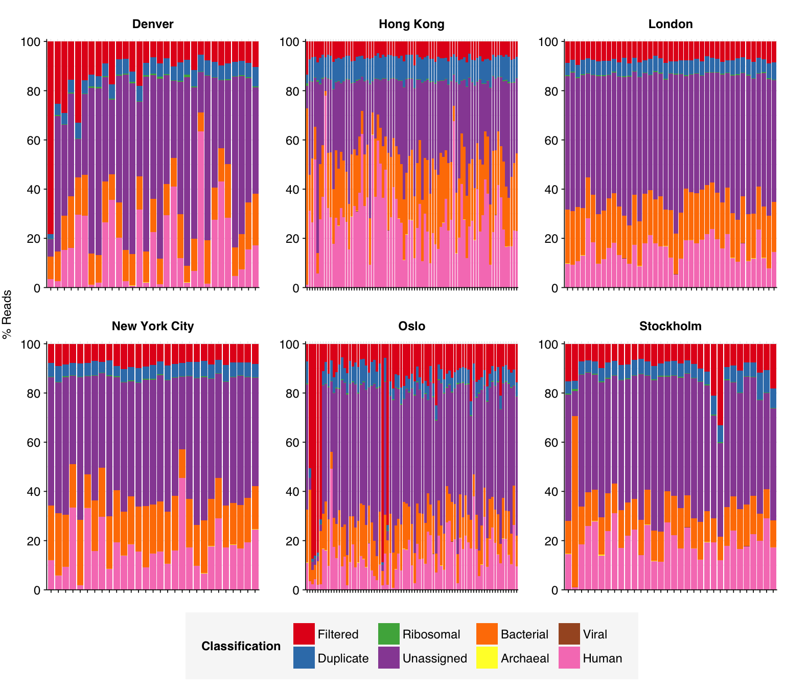
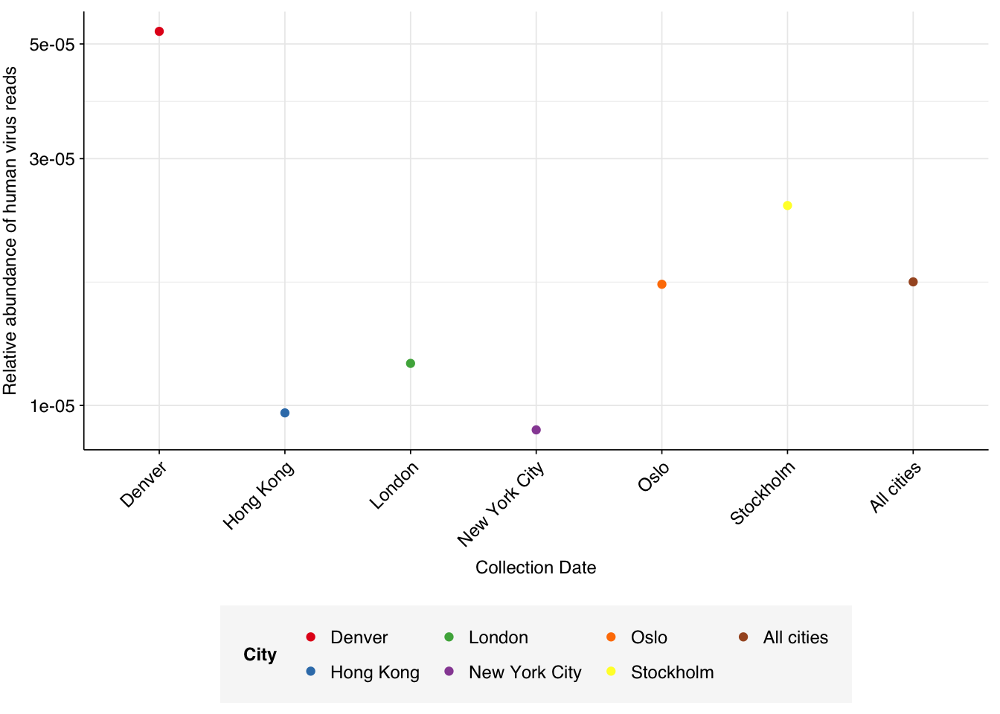

The last in our current run of air sampling datasets is Leung et al. (2021), a study of active air samples collected in public transit systems from six cities (Denver, Hong Kong, London, NYC, Oslo, Stockholm) from June to September 2017.
Samples from Denver originated from their rail and bus system; all other samples originated from metro systems. Collection took place during working days and working hours. Air samples were collected with the SASS 3100 Dry Air Samplers (filtration) for 30 min at a flowrate of 300 L/min using electret microfibrous filters. Filters were stationed at 1.5m above floor level, facing downward (to avoid direct deposition).
This was a DNA-sequencing study, focused on the bacterial microbiome and resistome. Sample processing followed an ideosyncratic protocol, where samples were pelleted and the pellet and supernatant were processed separately before being recombined for NA extraction and sequencing; I don’t have a great understanding of how this is expected to affect the viral fraction. Samples were sequenced with Illumina HiSeqX 2x150bp.
The raw data
In total, the Leung dataset comprised 293 samples:
Code
# Importing the data is a bit more complicated this time as the samples are split across three pipeline runsdata_dir_base<-"../data/2024-04-12_leung"data_dirs<-paste(data_dir_base, c(1,2,3), sep="/")# Define geo relationships for filling ingeo<-tribble(~region, ~country, ~city,"Asia", "Hong Kong", "Hong Kong","Europe", "Norway", "Oslo","Europe", "Sweden", "Stockholm","Europe", "United Kingdom", "London","North America", "USA", "New York City","North America", "USA", "Denver")# Data input pathslibraries_paths<-file.path(data_dirs, "sample-metadata.csv")basic_stats_paths<-file.path(data_dirs, "qc_basic_stats.tsv.gz")adapter_stats_paths<-file.path(data_dirs, "qc_adapter_stats.tsv.gz")quality_base_stats_paths<-file.path(data_dirs, "qc_quality_base_stats.tsv.gz")quality_seq_stats_paths<-file.path(data_dirs, "qc_quality_sequence_stats.tsv.gz")# Import libraries and extract metadata from sample nameslibraries_raw<-lapply(libraries_paths, read_csv, show_col_types =FALSE)%>%bind_rowslibraries<-libraries_raw%>%# Fix missing entriesmutate(city =ifelse(is.na(city), sub(", .*", "", location), city))%>%left_join(geo, by="city", suffix =c("", "_new"))%>%mutate(region =ifelse(region=="uncalculated", region_new, region), country =ifelse(country=="uncalculated", country_new, country))%>%select(-country_new, -region_new)%>%# Add sample aliasesarrange(city, date, location)%>%group_by(city, date)%>%mutate(sample_count =row_number(), date_alias =paste(as.character(date), sample_count, sep="_"), sample_alias =paste(city, date_alias, sep="_"))count_city<-libraries%>%group_by(region, country, city)%>%count(name="n_samples")count_city
Code
# Import QC datastages<-c("raw_concat", "cleaned", "dedup", "ribo_initial", "ribo_secondary")import_basic<-function(paths){lapply(paths, read_tsv, show_col_types =FALSE)%>%bind_rows%>%inner_join(libraries, by="sample")%>%arrange(sample)%>%mutate(stage =factor(stage, levels =stages), sample =fct_inorder(sample))}import_basic_paired<-function(paths){import_basic(paths)%>%arrange(read_pair)%>%mutate(read_pair =fct_inorder(as.character(read_pair)))}basic_stats<-import_basic(basic_stats_paths)adapter_stats<-import_basic_paired(adapter_stats_paths)quality_base_stats<-import_basic_paired(quality_base_stats_paths)quality_seq_stats<-import_basic_paired(quality_seq_stats_paths)# Filter to raw databasic_stats_raw<-basic_stats%>%filter(stage=="raw_concat")adapter_stats_raw<-adapter_stats%>%filter(stage=="raw_concat")quality_base_stats_raw<-quality_base_stats%>%filter(stage=="raw_concat")quality_seq_stats_raw<-quality_seq_stats%>%filter(stage=="raw_concat")# Get key values for readoutraw_read_counts<-basic_stats_raw%>%ungroup%>%summarize(rmin =min(n_read_pairs), rmax=max(n_read_pairs), rmean=mean(n_read_pairs), rtot =sum(n_read_pairs), btot =sum(n_bases_approx), dmin =min(percent_duplicates), dmax=max(percent_duplicates), dmean=mean(percent_duplicates), .groups ="drop")
These 293 samples yielded 0.39M-7.86M (mean 4.57M) reads per sample, for a total of 1.34B read pairs (402 gigabases of sequence). Read qualities were high at the 5’ end but dropped off significantly in some samples, in definite need of cleaning. Adapter levels were high. With the exception of a couple of early samples, inferred duplication levels were low (mean 9.4%).
The average fraction of reads lost at each stage in the preprocessing pipeline is shown in the following table. Read loss during cleaning was highly variable but averaged 11%, with a further ~7% lost during deduplication and ~0.3% during ribodepletion.
According to FASTQC, cleaning + deduplication was very effective at reducing measured duplicate levels, which fell from an average of 9.4% to 1.7% for DNA reads:
As before, to assess the high-level composition of the reads, I ran the ribodepleted files through Kraken (using the Standard 16 database) and summarized the results with Bracken. Combining these results with the read counts above gives us a breakdown of the inferred composition of the samples:
# Prepare plotting templatesg_comp_base<-ggplot(mapping=aes(x=date_alias, y=p_reads, fill=classification))+scale_x_discrete(name="Collection Date")+facet_wrap(~city, scales ="free")+theme_kit+theme(axis.text.x =element_blank())scale_y_pc_reads<-purrr::partial(scale_y_continuous, name ="% Reads", expand =c(0,0), labels =function(y)y*100)# Plot overall compositiong_comp<-g_comp_base+geom_col(data =read_comp_long, position ="stack")+scale_y_pc_reads(limits =c(0,1.01), breaks =seq(0,1,0.2))+scale_fill_brewer(palette ="Set1", name ="Classification")g_comp

Code
# Plot composition of minor componentsread_comp_minor<-read_comp_long%>%filter(classification%in%c("Archaeal", "Viral", "Other"))palette_minor<-brewer.pal(9, "Set1")[c(6,7,9)]g_comp_minor<-g_comp_base+geom_col(data=read_comp_minor, position ="stack")+scale_y_pc_reads()+scale_fill_manual(values=palette_minor, name ="Classification")g_comp_minor
In many respects, these resemble the Prussin data: high human fraction (mean 19.6%), high bacterial fraction (mean 18.2%), high unclassified fraction (mean 43.9%), low viral fraction (mean 0.01%). One notable difference is that archaeal reads are more abundant (0.034% compared to 0.016% for Prussin).
As in Prussin, viral DNA reads were dominated by Caudoviricetes phages. Other viral classes that are prominent in at least some samples include Herviviricetes (herpesviruses), Papovaviricetes (polyomaviruses and papillomaviruses), Revtraviricetes (retroviruses + Hep B), and Naldaviricetes (mainly arthropod viruses). I’ll investigate the first three of this latter group in more depth, restricting in each case to samples where that family makes up at least 5% of viral reads.
Papovaviricetes are quite heterogeneous across samples, and frequently diverse within samples. Alphapolyomavirus and Alphapapillomavirus are the most abundant genera overall, but Betapapillomavirus, Gammapapillomavirus, Mupapillomavirus and others all have strong showings.
Code
# Get samplespapova_taxid<-2732421papova_threshold<-0.05papova_samples<-viral_classes%>%filter(taxid==papova_taxid)%>%filter(p_reads_viral>0.05)%>%pull(sample)%>%unique# Get all taxa in classpapova_desc_taxids_old<-papova_taxidpapova_desc_taxids_new<-unique(c(papova_desc_taxids_old, viral_taxa%>%filter(parent_taxid%in%papova_desc_taxids_old)%>%pull(taxid)))while(length(papova_desc_taxids_new)>length(papova_desc_taxids_old)){papova_desc_taxids_old<-papova_desc_taxids_newpapova_desc_taxids_new<-unique(c(papova_desc_taxids_old, viral_taxa%>%filter(parent_taxid%in%papova_desc_taxids_old)%>%pull(taxid)))}# Get read countspapova_counts<-kraken_reports_viral_cleaned%>%filter(taxid%in%papova_desc_taxids_new,sample%in%papova_samples)%>%mutate(p_reads_papova =n_reads_clade/n_reads_clade[1])# Get genus compositionpapova_genera<-papova_counts%>%filter(rank=="G")papova_genera_major_tab<-papova_genera%>%group_by(name, taxid)%>%summarize(p_reads_papova_max =max(p_reads_papova), .groups="drop")%>%filter(p_reads_papova_max>=papova_threshold)papova_genera_major_list<-papova_genera_major_tab%>%pull(name)papova_genera_major<-papova_genera%>%filter(name%in%papova_genera_major_list)%>%select(name, taxid, sample, date_alias, city, p_reads_papova)papova_genera_minor<-papova_genera_major%>%group_by(sample, date_alias, city)%>%summarize(p_reads_papova_major =sum(p_reads_papova), .groups ="drop")%>%mutate(name ="Other", taxid=NA, p_reads_papova =1-p_reads_papova_major)%>%select(name, taxid, sample, date_alias, city, p_reads_papova)papova_genera_display<-bind_rows(papova_genera_major, papova_genera_minor)%>%arrange(desc(p_reads_papova))%>%mutate(name =factor(name, levels=c(papova_genera_major_list, "Other")))%>%rename(p_reads =p_reads_papova, classification=name)# Plotg_papova_genera<-g_comp_base+geom_col(data=papova_genera_display, position ="stack")+scale_y_continuous(name="% Papovaviricetes Reads", limits=c(0,1.02), breaks =seq(0,1,0.2), expand=c(0,0), labels =function(y)y*100)+scale_fill_manual(values=palette_viral, name ="Viral genus")+guides(fill=guide_legend(ncol=3))g_papova_genera
Only a few samples showed at least 5% prevalence of Herviviricetes, but those that did were typically dominated by one or a small number of species that varied between samples. Of these, human alphaherpesvirus 1 appeared in the most samples, but several other species were prominent in at least one sample:
Code
# Get sampleshervi_taxid<-2731363hervi_threshold<-0.05hervi_samples<-viral_classes%>%filter(taxid==hervi_taxid)%>%filter(p_reads_viral>0.05)%>%pull(sample)%>%unique# Get all taxa in classhervi_desc_taxids_old<-hervi_taxidhervi_desc_taxids_new<-unique(c(hervi_desc_taxids_old, viral_taxa%>%filter(parent_taxid%in%hervi_desc_taxids_old)%>%pull(taxid)))while(length(hervi_desc_taxids_new)>length(hervi_desc_taxids_old)){hervi_desc_taxids_old<-hervi_desc_taxids_newhervi_desc_taxids_new<-unique(c(hervi_desc_taxids_old, viral_taxa%>%filter(parent_taxid%in%hervi_desc_taxids_old)%>%pull(taxid)))}# Get read countshervi_counts<-kraken_reports_viral_cleaned%>%filter(taxid%in%hervi_desc_taxids_new,sample%in%hervi_samples)%>%mutate(p_reads_hervi =n_reads_clade/n_reads_clade[1])# Get genus compositionhervi_genera<-hervi_counts%>%filter(rank=="S")hervi_genera_major_tab<-hervi_genera%>%group_by(name, taxid)%>%summarize(p_reads_hervi_max =max(p_reads_hervi), .groups="drop")%>%filter(p_reads_hervi_max>=hervi_threshold)hervi_genera_major_list<-hervi_genera_major_tab%>%pull(name)hervi_genera_major<-hervi_genera%>%filter(name%in%hervi_genera_major_list)%>%select(name, taxid, sample, date_alias, city, p_reads_hervi)hervi_genera_minor<-hervi_genera_major%>%group_by(sample, date_alias, city)%>%summarize(p_reads_hervi_major =sum(p_reads_hervi), .groups ="drop")%>%mutate(name ="Other", taxid=NA, p_reads_hervi =1-p_reads_hervi_major)%>%select(name, taxid, sample, date_alias, city, p_reads_hervi)hervi_genera_display<-bind_rows(hervi_genera_major, hervi_genera_minor)%>%arrange(desc(p_reads_hervi))%>%mutate(name =factor(name, levels=c(hervi_genera_major_list, "Other")))%>%rename(p_reads =p_reads_hervi, classification=name)# Plotg_hervi_genera<-g_comp_base+geom_col(data=hervi_genera_display, position ="stack")+scale_y_continuous(name="% Herviviricetes Reads", limits=c(0,1.01), breaks =seq(0,1,0.2), expand=c(0,0), labels =function(y)y*100)+scale_fill_manual(values=palette_viral, name ="Viral genus")+guides(fill=guide_legend(ncol=3))g_hervi_genera
Finally, for Revtraviricetes, most samples were dominated by porcine type-C oncovirus, while one was dominated by an avian retrovirus. The last showed significant levels of two murine viruses plus HIV. I’m suspicious of many of these.
Code
# Get samplesrevtra_taxid<-2732514revtra_threshold<-0.05revtra_samples<-viral_classes%>%filter(taxid==revtra_taxid)%>%filter(p_reads_viral>0.05)%>%pull(sample)%>%unique# Get all taxa in classrevtra_desc_taxids_old<-revtra_taxidrevtra_desc_taxids_new<-unique(c(revtra_desc_taxids_old, viral_taxa%>%filter(parent_taxid%in%revtra_desc_taxids_old)%>%pull(taxid)))while(length(revtra_desc_taxids_new)>length(revtra_desc_taxids_old)){revtra_desc_taxids_old<-revtra_desc_taxids_newrevtra_desc_taxids_new<-unique(c(revtra_desc_taxids_old, viral_taxa%>%filter(parent_taxid%in%revtra_desc_taxids_old)%>%pull(taxid)))}# Get read countsrevtra_counts<-kraken_reports_viral_cleaned%>%filter(taxid%in%revtra_desc_taxids_new,sample%in%revtra_samples)%>%mutate(p_reads_revtra =n_reads_clade/n_reads_clade[1])# Get genus compositionrevtra_genera<-revtra_counts%>%filter(rank=="S")revtra_genera_major_tab<-revtra_genera%>%group_by(name, taxid)%>%summarize(p_reads_revtra_max =max(p_reads_revtra), .groups="drop")%>%filter(p_reads_revtra_max>=revtra_threshold)revtra_genera_major_list<-revtra_genera_major_tab%>%pull(name)revtra_genera_major<-revtra_genera%>%filter(name%in%revtra_genera_major_list)%>%select(name, taxid, sample, date_alias, city, p_reads_revtra)revtra_genera_minor<-revtra_genera_major%>%group_by(sample, date_alias, city)%>%summarize(p_reads_revtra_major =sum(p_reads_revtra), .groups ="drop")%>%mutate(name ="Other", taxid=NA, p_reads_revtra =1-p_reads_revtra_major)%>%select(name, taxid, sample, date_alias, city, p_reads_revtra)revtra_genera_display<-bind_rows(revtra_genera_major, revtra_genera_minor)%>%arrange(desc(p_reads_revtra))%>%mutate(name =factor(name, levels=c(revtra_genera_major_list, "Other")))%>%rename(p_reads =p_reads_revtra, classification=name)# Plotg_revtra_genera<-g_comp_base+geom_col(data=revtra_genera_display, position ="stack")+scale_y_continuous(name="% revtraviricetes Reads", limits=c(0,1.01), breaks =seq(0,1,0.2), expand=c(0,0), labels =function(y)y*100)+scale_fill_manual(values=palette_viral, name ="Viral genus")+guides(fill=guide_legend(ncol=3))g_revtra_genera
Human-infecting virus reads: validation
Next, I investigated the human-infecting virus read content of these unenriched samples. Using the same workflow I used for Prussin et al, I identified 24,278 read pairs as putatively human viral: 0.002% of reads surviving to that stage in the pipeline.
Looking into the composition of different read groups, the notable observation for me is the high prevalence of Pigeon torque teno virus among high-scoring false positives, with 77 such read pairs. BLAST maps these not to viruses but to their most common hosts, i.e. assorted species of pigeon. That said, the number of false positive PTTV reads is substantially exceeded by the number of true-positive PTTV reads (1883), which do map to appropriate viruses according to BLAST, so the presence of a comparatively small number of false positives seems unlikely to cause too much distortion.
# Get raw read countsread_counts_raw<-basic_stats_raw%>%select(sample, date_alias, city, n_reads_raw =n_read_pairs)# Get HV read countsmrg_hv<-mrg%>%mutate(hv_status =assigned_hv|hit_hv|highscore)%>%rename(taxid_all =taxid, taxid =taxid_best)read_counts_hv<-mrg_hv%>%filter(hv_status)%>%group_by(sample)%>%count(name="n_reads_hv")read_counts<-read_counts_raw%>%left_join(read_counts_hv, by="sample")%>%mutate(n_reads_hv =replace_na(n_reads_hv, 0))# Aggregateread_counts_city<-read_counts%>%group_by(city)%>%summarize(n_reads_raw =sum(n_reads_raw), n_reads_hv =sum(n_reads_hv), .groups="drop")%>%mutate(sample="All samples", date_alias ="All dates")read_counts_total<-read_counts_city%>%group_by(sample, date_alias)%>%summarize(n_reads_raw =sum(n_reads_raw), n_reads_hv =sum(n_reads_hv), .groups="drop")%>%mutate(city ="All cities")read_counts_agg<-read_counts_city%>%arrange(city)%>%bind_rows(read_counts_total)%>%mutate(p_reads_hv =n_reads_hv/n_reads_raw, city =fct_inorder(city))
Applying a disjunctive cutoff at S=20 identifies 23,191 read pairs as human-viral. This gives an overall relative HV abundance of \(1.73 \times 10^{-5}\).
Code
# Visualizeg_phv_agg<-ggplot(read_counts_agg, aes(x=city, color=city))+geom_point(aes(y=p_reads_hv))+scale_y_log10("Relative abundance of human virus reads")+scale_x_discrete(name="Collection Date")+#facet_grid(.~sample_type, scales = "free", space = "free_x") +scale_color_city()+theme_rotateg_phv_agg

This is lower than for DNA reads from other air-sampling datasets I’ve analyzed, but not drastically so:
At the family level, most samples across all cities are dominated by Papillomaviridae, Herpesviridae, Anelloviridae, Polyomaviridae, and to a lesser extentPoxviridae:
Code
# Get viral taxon names for putative HV readsviral_taxa$name[viral_taxa$taxid==249588]<-"Mamastrovirus"viral_taxa$name[viral_taxa$taxid==194960]<-"Kobuvirus"viral_taxa$name[viral_taxa$taxid==688449]<-"Salivirus"viral_taxa$name[viral_taxa$taxid==585893]<-"Picobirnaviridae"viral_taxa$name[viral_taxa$taxid==333922]<-"Betapapillomavirus"viral_taxa$name[viral_taxa$taxid==334207]<-"Betapapillomavirus 3"viral_taxa$name[viral_taxa$taxid==369960]<-"Porcine type-C oncovirus"viral_taxa$name[viral_taxa$taxid==333924]<-"Betapapillomavirus 2"viral_taxa$name[viral_taxa$taxid==687329]<-"Anelloviridae"viral_taxa$name[viral_taxa$taxid==325455]<-"Gammapapillomavirus"viral_taxa$name[viral_taxa$taxid==333750]<-"Alphapapillomavirus"viral_taxa$name[viral_taxa$taxid==694002]<-"Betacoronavirus"viral_taxa$name[viral_taxa$taxid==334202]<-"Mupapillomavirus"viral_taxa$name[viral_taxa$taxid==197911]<-"Alphainfluenzavirus"viral_taxa$name[viral_taxa$taxid==186938]<-"Respirovirus"viral_taxa$name[viral_taxa$taxid==333926]<-"Gammapapillomavirus 1"viral_taxa$name[viral_taxa$taxid==337051]<-"Betapapillomavirus 1"viral_taxa$name[viral_taxa$taxid==337043]<-"Alphapapillomavirus 4"viral_taxa$name[viral_taxa$taxid==694003]<-"Betacoronavirus 1"viral_taxa$name[viral_taxa$taxid==334204]<-"Mupapillomavirus 2"viral_taxa$name[viral_taxa$taxid==334208]<-"Betapapillomavirus 4"viral_taxa$name[viral_taxa$taxid==333928]<-"Gammapapillomavirus 2"viral_taxa$name[viral_taxa$taxid==337039]<-"Alphapapillomavirus 2"viral_taxa$name[viral_taxa$taxid==333929]<-"Gammapapillomavirus 3"viral_taxa$name[viral_taxa$taxid==337042]<-"Alphapapillomavirus 7"viral_taxa$name[viral_taxa$taxid==334203]<-"Mupapillomavirus 1"viral_taxa$name[viral_taxa$taxid==333757]<-"Alphapapillomavirus 8"viral_taxa$name[viral_taxa$taxid==337050]<-"Alphapapillomavirus 6"viral_taxa$name[viral_taxa$taxid==333767]<-"Alphapapillomavirus 3"viral_taxa$name[viral_taxa$taxid==333754]<-"Alphapapillomavirus 10"viral_taxa$name[viral_taxa$taxid==687363]<-"Torque teno virus 24"viral_taxa$name[viral_taxa$taxid==687342]<-"Torque teno virus 3"viral_taxa$name[viral_taxa$taxid==687359]<-"Torque teno virus 20"viral_taxa$name[viral_taxa$taxid==194441]<-"Primate T-lymphotropic virus 2"viral_taxa$name[viral_taxa$taxid==334209]<-"Betapapillomavirus 5"mrg_hv_named<-mrg_hv%>%left_join(viral_taxa, by="taxid")# Discover viral species & genera for HV readsraise_rank<-function(read_db, taxid_db, out_rank="species", verbose=FALSE){# Get higher ranks than search rankranks<-c("subspecies", "species", "subgenus", "genus", "subfamily", "family", "suborder", "order", "class", "subphylum", "phylum", "kingdom", "superkingdom")rank_match<-which.max(ranks==out_rank)high_ranks<-ranks[rank_match:length(ranks)]# Merge read DB and taxid DBreads<-read_db%>%select(-parent_taxid, -rank, -name)%>%left_join(taxid_db, by="taxid")# Extract sequences that are already at appropriate rankreads_rank<-filter(reads, rank==out_rank)# Drop sequences at a higher rank and return unclassified sequencesreads_norank<-reads%>%filter(rank!=out_rank, !rank%in%high_ranks, !is.na(taxid))while(nrow(reads_norank)>0){# As long as there are unclassified sequences...# Promote read taxids and re-merge with taxid DB, then re-classify and filterreads_remaining<-reads_norank%>%mutate(taxid =parent_taxid)%>%select(-parent_taxid, -rank, -name)%>%left_join(taxid_db, by="taxid")reads_rank<-reads_remaining%>%filter(rank==out_rank)%>%bind_rows(reads_rank)reads_norank<-reads_remaining%>%filter(rank!=out_rank, !rank%in%high_ranks, !is.na(taxid))}# Finally, extract and append reads that were excluded during the processreads_dropped<-reads%>%filter(!seq_id%in%reads_rank$seq_id)reads_out<-reads_rank%>%bind_rows(reads_dropped)%>%select(-parent_taxid, -rank, -name)%>%left_join(taxid_db, by="taxid")return(reads_out)}hv_reads_species<-raise_rank(mrg_hv_named, viral_taxa, "species")hv_reads_genus<-raise_rank(mrg_hv_named, viral_taxa, "genus")hv_reads_family<-raise_rank(mrg_hv_named, viral_taxa, "family")
Code
threshold_major_family<-0.05# Count reads for each human-viral familyhv_family_counts<-hv_reads_family%>%group_by(sample, date_alias, city, name, taxid)%>%count(name ="n_reads_hv")%>%group_by(sample, date_alias, city)%>%mutate(p_reads_hv =n_reads_hv/sum(n_reads_hv))# Identify high-ranking families and group othershv_family_major_tab<-hv_family_counts%>%group_by(name)%>%filter(p_reads_hv==max(p_reads_hv))%>%filter(row_number()==1)%>%arrange(desc(p_reads_hv))%>%filter(p_reads_hv>threshold_major_family)hv_family_counts_major<-hv_family_counts%>%mutate(name_display =ifelse(name%in%hv_family_major_tab$name, name, "Other"))%>%group_by(sample, date_alias, city, name_display)%>%summarize(n_reads_hv =sum(n_reads_hv), p_reads_hv =sum(p_reads_hv), .groups="drop")%>%mutate(name_display =factor(name_display, levels =c(hv_family_major_tab$name, "Other")))hv_family_counts_display<-hv_family_counts_major%>%rename(p_reads =p_reads_hv, classification =name_display)# Plotg_hv_family<-g_comp_base+geom_col(data=hv_family_counts_display, position ="stack")+scale_y_continuous(name="% HV Reads", limits=c(0,1.01), breaks =seq(0,1,0.2), expand=c(0,0), labels =function(y)y*100)+scale_fill_manual(values=palette_viral, name ="Viral family")+labs(title="Family composition of human-viral reads")+guides(fill=guide_legend(ncol=4))+theme(plot.title =element_text(size=rel(1.4), hjust=0, face="plain"))g_hv_family
In investigating individual viral families, to avoid distortions from a few rare reads, I restricted myself to samples where that family made up at least 10% of human-viral reads.
As usual, Papillomaviridae reads are divided among many different viral species. In this case, Betapapillomavirus 1 and 2 are the most prevalent across samples, but many other alpha-, beta-, gamma-, and mupapillomaviruses are highly prevalent in at least some samples.
Code
threshold_major_species<-0.4taxid_papilloma<-151340# Get set of Papillomaviridae readspapilloma_samples<-hv_family_counts%>%filter(taxid==taxid_papilloma)%>%filter(p_reads_hv>=0.1)%>%pull(sample)papilloma_ids<-hv_reads_family%>%filter(taxid==taxid_papilloma, sample%in%papilloma_samples)%>%pull(seq_id)# Count reads for each Papillomaviridae speciespapilloma_species_counts<-hv_reads_species%>%filter(seq_id%in%papilloma_ids)%>%group_by(sample, date_alias, city, name, taxid)%>%count(name ="n_reads_hv")%>%group_by(sample, date_alias, city)%>%mutate(p_reads_papilloma =n_reads_hv/sum(n_reads_hv))# Identify high-ranking families and group otherspapilloma_species_major_tab<-papilloma_species_counts%>%group_by(name)%>%filter(p_reads_papilloma==max(p_reads_papilloma))%>%filter(row_number()==1)%>%arrange(desc(p_reads_papilloma))%>%filter(p_reads_papilloma>threshold_major_species)papilloma_species_counts_major<-papilloma_species_counts%>%mutate(name_display =ifelse(name%in%papilloma_species_major_tab$name, name, "Other"))%>%group_by(sample, date_alias, city, name_display)%>%summarize(n_reads_papilloma =sum(n_reads_hv), p_reads_papilloma =sum(p_reads_papilloma), .groups="drop")%>%mutate(name_display =factor(name_display, levels =c(papilloma_species_major_tab$name, "Other")))papilloma_species_counts_display<-papilloma_species_counts_major%>%rename(p_reads =p_reads_papilloma, classification =name_display)# Plotg_papilloma_species<-g_comp_base+geom_col(data=papilloma_species_counts_display, position ="stack")+scale_y_continuous(name="% Papillomaviridae Reads", limits=c(0,1.01), breaks =seq(0,1,0.2), expand=c(0,0), labels =function(y)y*100)+scale_fill_manual(values=palette_viral, name ="Viral species")+labs(title="Species composition of Papillomaviridae reads")+guides(fill=guide_legend(ncol=3))+theme(plot.title =element_text(size=rel(1.4), hjust=0, face="plain"))g_papilloma_species
Code
# Get most prominent species for textpapilloma_species_collate<-papilloma_species_counts%>%group_by(name, taxid)%>%summarize(n_reads_tot =sum(n_reads_hv), p_reads_mean =mean(p_reads_papilloma), .groups="drop")%>%arrange(desc(n_reads_tot))
In terms of total reads across samples, herpesviruses are dominated by Epstein-Barr virus (Human gammaherpesvirus 4), HSV-1 (Human alphaherpesvirus 1), and human cytomegalovirus (Human betaherpesvirus 5). However, numerous other herpesviruses are also present.
Code
threshold_major_species<-0.4taxid_herpes<-viral_taxa%>%filter(name=="Herpesviridae")%>%pull(taxid)# Get set of herpesviridae readsherpes_samples<-hv_family_counts%>%filter(taxid==taxid_herpes)%>%filter(p_reads_hv>=0.1)%>%pull(sample)herpes_ids<-hv_reads_family%>%filter(taxid==taxid_herpes, sample%in%herpes_samples)%>%pull(seq_id)# Count reads for each herpesviridae speciesherpes_species_counts<-hv_reads_species%>%filter(seq_id%in%herpes_ids)%>%group_by(sample, date_alias, city, name, taxid)%>%count(name ="n_reads_hv")%>%group_by(sample, date_alias, city)%>%mutate(p_reads_herpes =n_reads_hv/sum(n_reads_hv))# Identify high-ranking families and group othersherpes_species_major_tab<-herpes_species_counts%>%group_by(name)%>%filter(p_reads_herpes==max(p_reads_herpes))%>%filter(row_number()==1)%>%arrange(desc(p_reads_herpes))%>%filter(p_reads_herpes>threshold_major_species)herpes_species_counts_major<-herpes_species_counts%>%mutate(name_display =ifelse(name%in%herpes_species_major_tab$name, name, "Other"))%>%group_by(sample, date_alias, city, name_display)%>%summarize(n_reads_herpes =sum(n_reads_hv), p_reads_herpes =sum(p_reads_herpes), .groups="drop")%>%mutate(name_display =factor(name_display, levels =c(herpes_species_major_tab$name, "Other")))herpes_species_counts_display<-herpes_species_counts_major%>%rename(p_reads =p_reads_herpes, classification =name_display)# Plotg_herpes_species<-g_comp_base+geom_col(data=herpes_species_counts_display, position ="stack")+scale_y_continuous(name="% herpesviridae Reads", limits=c(0,1.01), breaks =seq(0,1,0.2), expand=c(0,0), labels =function(y)y*100)+scale_fill_manual(values=palette_viral, name ="Viral species")+labs(title="Species composition of Herpesviridae reads")+guides(fill=guide_legend(ncol=3))+theme(plot.title =element_text(size=rel(1.4), hjust=0, face="plain"))g_herpes_species
Code
# Get most prominent species for textherpes_species_collate<-herpes_species_counts%>%group_by(name, taxid)%>%summarize(n_reads_tot =sum(n_reads_hv), p_reads_mean =mean(p_reads_herpes), .groups="drop")%>%arrange(desc(n_reads_tot))
In sharp contrast to the above, my pipeline classifies the great majority of anellovirus reads in all samples into a single species, torque teno virus. Looking online, it looks like there are a lot of “torque teno viruses” within Anelloviridae – for example, Wikipedia says that the genus Alphatorquevirus contains >20 numbered torque teno viruses – so I’m not sure exactly which virus this refers to.
Code
threshold_major_species<-0.1taxid_anello<-viral_taxa%>%filter(name=="Anelloviridae")%>%pull(taxid)# Get set of anelloviridae readsanello_samples<-hv_family_counts%>%filter(taxid==taxid_anello)%>%filter(p_reads_hv>=0.1)%>%pull(sample)anello_ids<-hv_reads_family%>%filter(taxid==taxid_anello, sample%in%anello_samples)%>%pull(seq_id)# Count reads for each anelloviridae speciesanello_species_counts<-hv_reads_species%>%filter(seq_id%in%anello_ids)%>%group_by(sample, date_alias, city, name, taxid)%>%count(name ="n_reads_hv")%>%group_by(sample, date_alias, city)%>%mutate(p_reads_anello =n_reads_hv/sum(n_reads_hv))# Identify high-ranking families and group othersanello_species_major_tab<-anello_species_counts%>%group_by(name)%>%filter(p_reads_anello==max(p_reads_anello))%>%filter(row_number()==1)%>%arrange(desc(p_reads_anello))%>%filter(p_reads_anello>threshold_major_species)anello_species_counts_major<-anello_species_counts%>%mutate(name_display =ifelse(name%in%anello_species_major_tab$name, name, "Other"))%>%group_by(sample, date_alias, city, name_display)%>%summarize(n_reads_anello =sum(n_reads_hv), p_reads_anello =sum(p_reads_anello), .groups="drop")%>%mutate(name_display =factor(name_display, levels =c(anello_species_major_tab$name, "Other")))anello_species_counts_display<-anello_species_counts_major%>%rename(p_reads =p_reads_anello, classification =name_display)# Plotg_anello_species<-g_comp_base+geom_col(data=anello_species_counts_display, position ="stack")+scale_y_continuous(name="% Anelloviridae Reads", limits=c(0,1.01), breaks =seq(0,1,0.2), expand=c(0,0), labels =function(y)y*100)+scale_fill_manual(values=palette_viral, name ="Viral species")+labs(title="Species composition of Anelloviridae reads")+guides(fill=guide_legend(ncol=4))+theme(plot.title =element_text(size=rel(1.4), hjust=0, face="plain"))g_anello_species
Code
# Get most prominent species for textanello_species_collate<-anello_species_counts%>%group_by(name, taxid)%>%summarize(n_reads_tot =sum(n_reads_hv), p_reads_mean =mean(p_reads_anello), .groups="drop")%>%arrange(desc(n_reads_tot))
Polyomaviruses are intermediate; most viruses are dominated by a single species, Alphapolyomavirus quintihominis, but several other viruses in the family are also present.
Code
threshold_major_species<-0.1taxid_polyoma<-viral_taxa%>%filter(name=="Polyomaviridae")%>%pull(taxid)# Get set of polyomaviridae reads# Get set of polyomaviridae readspolyoma_samples<-hv_family_counts%>%filter(taxid==taxid_polyoma)%>%filter(p_reads_hv>=0.1)%>%pull(sample)polyoma_ids<-hv_reads_family%>%filter(taxid==taxid_polyoma, sample%in%polyoma_samples)%>%pull(seq_id)# Count reads for each polyomaviridae speciespolyoma_species_counts<-hv_reads_species%>%filter(seq_id%in%polyoma_ids)%>%group_by(sample, date_alias, city, name, taxid)%>%count(name ="n_reads_hv")%>%group_by(sample, date_alias, city)%>%mutate(p_reads_polyoma =n_reads_hv/sum(n_reads_hv))# Identify high-ranking families and group otherspolyoma_species_major_tab<-polyoma_species_counts%>%group_by(name)%>%filter(p_reads_polyoma==max(p_reads_polyoma))%>%filter(row_number()==1)%>%arrange(desc(p_reads_polyoma))%>%filter(p_reads_polyoma>threshold_major_species)polyoma_species_counts_major<-polyoma_species_counts%>%mutate(name_display =ifelse(name%in%polyoma_species_major_tab$name, name, "Other"))%>%group_by(sample, date_alias, city, name_display)%>%summarize(n_reads_polyoma =sum(n_reads_hv), p_reads_polyoma =sum(p_reads_polyoma), .groups="drop")%>%mutate(name_display =factor(name_display, levels =c(polyoma_species_major_tab$name, "Other")))polyoma_species_counts_display<-polyoma_species_counts_major%>%rename(p_reads =p_reads_polyoma, classification =name_display)# Plotg_polyoma_species<-g_comp_base+geom_col(data=polyoma_species_counts_display, position ="stack")+scale_y_continuous(name="% Polyomaviridae Reads", limits=c(0,1.01), breaks =seq(0,1,0.2), expand=c(0,0), labels =function(y)y*100)+scale_fill_manual(values=palette_viral, name ="Viral species")+labs(title="Species composition of Polyomaviridae reads")+guides(fill=guide_legend(ncol=2))+theme(plot.title =element_text(size=rel(1.4), hjust=0, face="plain"))g_polyoma_species
Code
# Get most prominent species for textpolyoma_species_collate<-polyoma_species_counts%>%group_by(name, taxid)%>%summarize(n_reads_tot =sum(n_reads_hv), p_reads_mean =mean(p_reads_polyoma), .groups="drop")%>%arrange(desc(n_reads_tot))
Finally, poxvirus reads in most samples are dominated by molluscum contagiosum virus (which I expect to be real), followed by Orf virus (which I expect to be fake). These expectations are borne out by BLAST alignments (below).
Code
threshold_major_species<-0.1taxid_pox<-viral_taxa%>%filter(name=="Poxviridae")%>%pull(taxid)# Get set of poxviridae reads# Get set of poxviridae readspox_samples<-hv_family_counts%>%filter(taxid==taxid_pox)%>%filter(p_reads_hv>=0.1)%>%pull(sample)pox_ids<-hv_reads_family%>%filter(taxid==taxid_pox, sample%in%pox_samples)%>%pull(seq_id)# Count reads for each poxviridae speciespox_species_counts<-hv_reads_species%>%filter(seq_id%in%pox_ids)%>%group_by(sample, date_alias, city, name, taxid)%>%count(name ="n_reads_hv")%>%group_by(sample, date_alias, city)%>%mutate(p_reads_pox =n_reads_hv/sum(n_reads_hv))# Identify high-ranking families and group otherspox_species_major_tab<-pox_species_counts%>%group_by(name)%>%filter(p_reads_pox==max(p_reads_pox))%>%filter(row_number()==1)%>%arrange(desc(p_reads_pox))%>%filter(p_reads_pox>threshold_major_species)pox_species_counts_major<-pox_species_counts%>%mutate(name_display =ifelse(name%in%pox_species_major_tab$name, name, "Other"))%>%group_by(sample, date_alias, city, name_display)%>%summarize(n_reads_pox =sum(n_reads_hv), p_reads_pox =sum(p_reads_pox), .groups="drop")%>%mutate(name_display =factor(name_display, levels =c(pox_species_major_tab$name, "Other")))pox_species_counts_display<-pox_species_counts_major%>%rename(p_reads =p_reads_pox, classification =name_display)# Plotg_pox_species<-g_comp_base+geom_col(data=pox_species_counts_display, position ="stack")+scale_y_continuous(name="% Poxviridae Reads", limits=c(0,1.01), breaks =seq(0,1,0.2), expand=c(0,0), labels =function(y)y*100)+scale_fill_manual(values=palette_viral, name ="Viral species")+labs(title="Species composition of Poxviridae reads")+guides(fill=guide_legend(ncol=4))+theme(plot.title =element_text(size=rel(1.4), hjust=0, face="plain"))g_pox_species
Code
# Get most prominent species for textpox_species_collate<-pox_species_counts%>%group_by(name, taxid)%>%summarize(n_reads_tot =sum(n_reads_hv), p_reads_mean =mean(p_reads_pox), .groups="drop")%>%arrange(desc(n_reads_tot))
Finally, here again are the overall relative abundances of the specific viral genera I picked out manually in my last entry:
Code
# Define reference generapath_genera_rna<-c("Mamastrovirus", "Enterovirus", "Salivirus", "Kobuvirus", "Norovirus", "Sapovirus", "Rotavirus", "Alphacoronavirus", "Betacoronavirus", "Alphainfluenzavirus", "Betainfluenzavirus", "Lentivirus")path_genera_dna<-c("Mastadenovirus", "Alphapolyomavirus", "Betapolyomavirus", "Alphapapillomavirus", "Betapapillomavirus", "Gammapapillomavirus", "Orthopoxvirus", "Simplexvirus","Lymphocryptovirus", "Cytomegalovirus", "Dependoparvovirus")path_genera<-bind_rows(tibble(name=path_genera_rna, genome_type="RNA genome"),tibble(name=path_genera_dna, genome_type="DNA genome"))%>%left_join(viral_taxa, by="name")# Count in each samplen_path_genera<-hv_reads_genus%>%group_by(sample, date_alias, city, name, taxid)%>%count(name="n_reads_viral")%>%inner_join(path_genera, by=c("name", "taxid"))%>%left_join(read_counts_raw, by=c("sample", "date_alias", "city"))%>%mutate(p_reads_viral =n_reads_viral/n_reads_raw)# Pivot out and back to add zero linesn_path_genera_out<-n_path_genera%>%ungroup%>%select(sample, name, n_reads_viral)%>%pivot_wider(names_from="name", values_from="n_reads_viral", values_fill=0)%>%pivot_longer(-sample, names_to="name", values_to="n_reads_viral")%>%left_join(read_counts_raw, by="sample")%>%left_join(path_genera, by="name")%>%mutate(p_reads_viral =n_reads_viral/n_reads_raw)## Aggregate across datesn_path_genera_stype<-n_path_genera_out%>%group_by(name, taxid, genome_type, city)%>%summarize(n_reads_raw =sum(n_reads_raw), n_reads_viral =sum(n_reads_viral), .groups ="drop")%>%mutate(sample="All samples", date="All dates", p_reads_viral =n_reads_viral/n_reads_raw, na_type ="DNA")# Plotg_path_genera<-ggplot(n_path_genera_stype,aes(y=name, x=p_reads_viral, color=city))+geom_point()+scale_x_log10(name="Relative abundance")+scale_color_city()+facet_grid(genome_type~., scales="free_y")+theme_base+theme(axis.title.y =element_blank())g_path_genera
Warning: Transformation introduced infinite values in continuous x-axis
Conclusion
This is the third, largest, and final of this tranche of air-sampling datasets that I’ve run through this pipeline. Many of the high-level findings were similar to Prussin and Rosario, including high relative abundance of human reads, low total viral reads, an absence of enteric viruses, and high abundance of papillomaviruses among human-infecting viruses.
In the future, I’ll do a more in-depth comparative analysis across different datasets to compare the abundance of different viruses. For now, though, there are some major updates to the pipeline I want to make before I do any more public analyses.
Source Code
---title: "Workflow analysis of Leung et al. (2021)"subtitle: "Air sampling from urban public transit systems."author: "Will Bradshaw"date: 2024-04-19format: html: code-fold: true code-tools: true code-link: true df-print: pagededitor: visualtitle-block-banner: black---```{r}#| label: load-packages#| include: falselibrary(tidyverse)library(cowplot)library(patchwork)library(fastqcr)library(RColorBrewer)source("../scripts/aux_plot-theme.R")theme_base <- theme_base +theme(aspect.ratio =NULL)theme_rotate <- theme_base +theme(axis.text.x =element_text(hjust =1, angle =45),)theme_kit <- theme_rotate +theme(axis.title.x =element_blank(),)tnl <-theme(legend.position ="none")```The last in our current run of air sampling datasets is [Leung et al.](https://microbiomejournal.biomedcentral.com/articles/10.1186/s40168-021-01044-7) (2021), a study of active air samples collected in public transit systems from six cities (Denver, Hong Kong, London, NYC, Oslo, Stockholm) from June to September 2017.Samples from Denver originated from their rail and bus system; all other samples originated from metro systems. Collection took place during working days and working hours. Air samples were collected with the SASS 3100 Dry Air Samplers (filtration) for 30 min at a flowrate of 300 L/min using electret microfibrous filters. Filters were stationed at 1.5m above floor level, facing downward (to avoid direct deposition).This was a DNA-sequencing study, focused on the bacterial microbiome and resistome. Sample processing followed an ideosyncratic protocol, where samples were pelleted and the pellet and supernatant were processed separately before being recombined for NA extraction and sequencing; I don't have a great understanding of how this is expected to affect the viral fraction. Samples were sequenced with Illumina HiSeqX 2x150bp.# The raw dataIn total, the Leung dataset comprised 293 samples:```{r}#| warning: false#| label: import-qc-data# Importing the data is a bit more complicated this time as the samples are split across three pipeline runsdata_dir_base <-"../data/2024-04-12_leung"data_dirs <-paste(data_dir_base, c(1,2,3), sep="/")# Define geo relationships for filling ingeo <-tribble(~region, ~country, ~city,"Asia", "Hong Kong", "Hong Kong","Europe", "Norway", "Oslo","Europe", "Sweden", "Stockholm","Europe", "United Kingdom", "London","North America", "USA", "New York City","North America", "USA", "Denver")# Data input pathslibraries_paths <-file.path(data_dirs, "sample-metadata.csv")basic_stats_paths <-file.path(data_dirs, "qc_basic_stats.tsv.gz")adapter_stats_paths <-file.path(data_dirs, "qc_adapter_stats.tsv.gz")quality_base_stats_paths <-file.path(data_dirs, "qc_quality_base_stats.tsv.gz")quality_seq_stats_paths <-file.path(data_dirs, "qc_quality_sequence_stats.tsv.gz")# Import libraries and extract metadata from sample nameslibraries_raw <-lapply(libraries_paths, read_csv, show_col_types =FALSE) %>% bind_rowslibraries <- libraries_raw %>%# Fix missing entriesmutate(city =ifelse(is.na(city), sub(", .*", "", location), city)) %>%left_join(geo, by="city", suffix =c("", "_new")) %>%mutate(region =ifelse(region =="uncalculated", region_new, region),country =ifelse(country =="uncalculated", country_new, country)) %>%select(-country_new, -region_new) %>%# Add sample aliasesarrange(city, date, location) %>%group_by(city, date) %>%mutate(sample_count =row_number(),date_alias =paste(as.character(date), sample_count, sep="_"),sample_alias =paste(city, date_alias, sep="_"))count_city <- libraries %>%group_by(region, country, city) %>%count(name="n_samples")count_city``````{r}#| label: process-qc-data# Import QC datastages <-c("raw_concat", "cleaned", "dedup", "ribo_initial", "ribo_secondary")import_basic <-function(paths){lapply(paths, read_tsv, show_col_types =FALSE) %>% bind_rows %>%inner_join(libraries, by="sample") %>%arrange(sample) %>%mutate(stage =factor(stage, levels = stages),sample =fct_inorder(sample))}import_basic_paired <-function(paths){import_basic(paths) %>%arrange(read_pair) %>%mutate(read_pair =fct_inorder(as.character(read_pair)))}basic_stats <-import_basic(basic_stats_paths)adapter_stats <-import_basic_paired(adapter_stats_paths)quality_base_stats <-import_basic_paired(quality_base_stats_paths)quality_seq_stats <-import_basic_paired(quality_seq_stats_paths)# Filter to raw databasic_stats_raw <- basic_stats %>%filter(stage =="raw_concat")adapter_stats_raw <- adapter_stats %>%filter(stage =="raw_concat")quality_base_stats_raw <- quality_base_stats %>%filter(stage =="raw_concat")quality_seq_stats_raw <- quality_seq_stats %>%filter(stage =="raw_concat")# Get key values for readoutraw_read_counts <- basic_stats_raw %>% ungroup %>%summarize(rmin =min(n_read_pairs), rmax=max(n_read_pairs),rmean=mean(n_read_pairs), rtot =sum(n_read_pairs),btot =sum(n_bases_approx),dmin =min(percent_duplicates), dmax=max(percent_duplicates),dmean=mean(percent_duplicates), .groups ="drop")```These 293 samples yielded 0.39M-7.86M (mean 4.57M) reads per sample, for a total of 1.34B read pairs (402 gigabases of sequence). Read qualities were high at the 5' end but dropped off significantly in some samples, in definite need of cleaning. Adapter levels were high. With the exception of a couple of early samples, inferred duplication levels were low (mean 9.4%).```{r}#| fig-width: 9#| warning: false#| label: plot-basic-stats# Prepare databasic_stats_raw_metrics <- basic_stats_raw %>%select(sample, city, date,`# Read pairs`= n_read_pairs,`Total base pairs\n(approx)`= n_bases_approx,`% Duplicates\n(FASTQC)`= percent_duplicates) %>%pivot_longer(-(sample:date), names_to ="metric", values_to ="value") %>%mutate(metric =fct_inorder(metric))# Set up plot templatesscale_fill_city <- purrr::partial(scale_fill_brewer, palette="Set1",name="City")scale_x_cdate <- purrr::partial(scale_x_date, name="Collection Date",date_breaks ="1 month", date_labels ="%Y-%m-%d")g_basic <-ggplot(basic_stats_raw_metrics, aes(x=date, y=value, fill=city, group=interaction(city,sample))) +geom_col(position ="dodge") +scale_x_cdate() +scale_y_continuous(expand=c(0,0)) +expand_limits(y=c(0,100)) +scale_fill_city() +facet_grid(metric~., scales ="free", space="free_x", switch="y") + theme_rotate +theme(axis.title.y =element_blank(),strip.text.y =element_text(face="plain") )g_basic``````{r}#| label: plot-raw-quality# Set up plotting templatesscale_color_city <- purrr::partial(scale_color_brewer, palette="Set1",name="City")g_qual_raw <-ggplot(mapping=aes(color=city, linetype=read_pair, group=interaction(sample,read_pair))) +scale_color_city() +scale_linetype_discrete(name ="Read Pair") +guides(color=guide_legend(nrow=2,byrow=TRUE),linetype =guide_legend(nrow=2,byrow=TRUE)) + theme_base# Visualize adaptersg_adapters_raw <- g_qual_raw +geom_line(aes(x=position, y=pc_adapters), data=adapter_stats_raw) +scale_y_continuous(name="% Adapters", limits=c(0,NA),breaks =seq(0,100,10), expand=c(0,0)) +scale_x_continuous(name="Position", limits=c(0,NA),breaks=seq(0,140,20), expand=c(0,0)) +facet_grid(.~adapter)g_adapters_raw# Visualize qualityg_quality_base_raw <- g_qual_raw +geom_hline(yintercept=25, linetype="dashed", color="red") +geom_hline(yintercept=30, linetype="dashed", color="red") +geom_line(aes(x=position, y=mean_phred_score), data=quality_base_stats_raw) +scale_y_continuous(name="Mean Phred score", expand=c(0,0), limits=c(10,45)) +scale_x_continuous(name="Position", limits=c(0,NA),breaks=seq(0,140,20), expand=c(0,0))g_quality_base_rawg_quality_seq_raw <- g_qual_raw +geom_vline(xintercept=25, linetype="dashed", color="red") +geom_vline(xintercept=30, linetype="dashed", color="red") +geom_line(aes(x=mean_phred_score, y=n_sequences), data=quality_seq_stats_raw) +scale_x_continuous(name="Mean Phred score", expand=c(0,0)) +scale_y_continuous(name="# Sequences", expand=c(0,0))g_quality_seq_raw```# PreprocessingThe average fraction of reads lost at each stage in the preprocessing pipeline is shown in the following table. Read loss during cleaning was highly variable but averaged 11%, with a further \~7% lost during deduplication and \~0.3% during ribodepletion.```{r}#| label: preproc-tablen_reads_rel <- basic_stats %>%select(sample, date, city, stage, percent_duplicates, n_read_pairs) %>%group_by(sample) %>%arrange(sample, stage) %>%mutate(p_reads_retained =replace_na(n_read_pairs /lag(n_read_pairs), 0),p_reads_lost =1- p_reads_retained,p_reads_retained_abs = n_read_pairs / n_read_pairs[1],p_reads_lost_abs =1-p_reads_retained_abs,p_reads_lost_abs_marginal =replace_na(p_reads_lost_abs -lag(p_reads_lost_abs), 0))n_reads_rel_display <- n_reads_rel %>%rename(Stage=stage, City=city) %>%group_by(Stage) %>%summarize(`% Total Reads Lost (Cumulative)`=paste0(round(min(p_reads_lost_abs*100),1), "-", round(max(p_reads_lost_abs*100),1), " (mean ", round(mean(p_reads_lost_abs*100),1), ")"),`% Total Reads Lost (Marginal)`=paste0(round(min(p_reads_lost_abs_marginal*100),1), "-", round(max(p_reads_lost_abs_marginal*100),1), " (mean ", round(mean(p_reads_lost_abs_marginal*100),1), ")"), .groups="drop") %>%filter(Stage !="raw_concat") %>%mutate(Stage = Stage %>% as.numeric %>%factor(labels=c("Trimming & filtering", "Deduplication", "Initial ribodepletion", "Secondary ribodepletion")))n_reads_rel_display``````{r}#| label: preproc-figures#| warning: false#| fig-height: 6#| fig-width: 6g_stage_trace <-ggplot(basic_stats, aes(x=stage, color=city, group=sample)) +scale_color_city() +facet_wrap(~city, scales="free", ncol=3) + theme_kit +theme(legend.position ="none")# Plot reads over preprocessingg_reads_stages <- g_stage_trace +geom_line(aes(y=n_read_pairs)) +scale_y_continuous("# Read pairs", expand=c(0,0), limits=c(0,NA))g_reads_stages# Plot relative read losses during preprocessingg_reads_rel <-ggplot(n_reads_rel, aes(x=stage, color=city, group=sample)) +geom_line(aes(y=p_reads_lost_abs_marginal)) +scale_y_continuous("% Total Reads Lost", expand=c(0,0), labels =function(x) x*100) +scale_color_city() +facet_wrap(~city, scales="free", ncol=3) + theme_kit +theme(legend.position ="none")g_reads_rel```Data cleaning was very successful at removing adapters and improving read qualities:```{r}#| warning: false#| label: plot-quality#| fig-height: 7g_qual <-ggplot(mapping=aes(color=city, linetype=read_pair, group=interaction(sample,read_pair))) +scale_color_city() +scale_linetype_discrete(name ="Read Pair") +guides(color=guide_legend(nrow=2,byrow=TRUE),linetype =guide_legend(nrow=2,byrow=TRUE)) + theme_base# Visualize adaptersg_adapters <- g_qual +geom_line(aes(x=position, y=pc_adapters), data=adapter_stats) +scale_y_continuous(name="% Adapters", limits=c(0,20),breaks =seq(0,50,10), expand=c(0,0)) +scale_x_continuous(name="Position", limits=c(0,NA),breaks=seq(0,140,20), expand=c(0,0)) +facet_grid(stage~adapter)g_adapters# Visualize qualityg_quality_base <- g_qual +geom_hline(yintercept=25, linetype="dashed", color="red") +geom_hline(yintercept=30, linetype="dashed", color="red") +geom_line(aes(x=position, y=mean_phred_score), data=quality_base_stats) +scale_y_continuous(name="Mean Phred score", expand=c(0,0), limits=c(10,45)) +scale_x_continuous(name="Position", limits=c(0,NA),breaks=seq(0,140,20), expand=c(0,0)) +facet_grid(stage~.)g_quality_baseg_quality_seq <- g_qual +geom_vline(xintercept=25, linetype="dashed", color="red") +geom_vline(xintercept=30, linetype="dashed", color="red") +geom_line(aes(x=mean_phred_score, y=n_sequences), data=quality_seq_stats) +scale_x_continuous(name="Mean Phred score", expand=c(0,0)) +scale_y_continuous(name="# Sequences", expand=c(0,0)) +facet_grid(stage~.)g_quality_seq```According to FASTQC, cleaning + deduplication was very effective at reducing measured duplicate levels, which fell from an average of 9.4% to 1.7% for DNA reads:```{r}#| label: preproc-dedup#| fig-height: 6#| fig-width: 6stage_dup <- basic_stats %>%group_by(stage) %>%summarize(dmin =min(percent_duplicates), dmax=max(percent_duplicates),dmean=mean(percent_duplicates), .groups ="drop")g_dup_stages <- g_stage_trace +geom_line(aes(y=percent_duplicates)) +scale_y_continuous("% Duplicates", limits=c(0,NA), expand=c(0,0))g_dup_stagesg_readlen_stages <- g_stage_trace +geom_line(aes(y=mean_seq_len)) +scale_y_continuous("Mean read length (nt)", expand=c(0,0), limits=c(0,NA))g_readlen_stages```# High-level compositionAs before, to assess the high-level composition of the reads, I ran the ribodepleted files through Kraken (using the Standard 16 database) and summarized the results with Bracken. Combining these results with the read counts above gives us a breakdown of the inferred composition of the samples:```{r}#| label: prepare-composition# Import Bracken databracken_paths <-file.path(data_dirs, "bracken_counts.tsv")bracken <-lapply(bracken_paths, read_tsv, show_col_types =FALSE) %>% bind_rowstotal_assigned <- bracken %>%group_by(sample) %>%summarize(name ="Total",kraken_assigned_reads =sum(kraken_assigned_reads),added_reads =sum(added_reads),new_est_reads =sum(new_est_reads),fraction_total_reads =sum(fraction_total_reads))bracken_spread <- bracken %>%select(name, sample, new_est_reads) %>%mutate(name =tolower(name)) %>%pivot_wider(id_cols ="sample", names_from ="name", values_from ="new_est_reads")# Count readsread_counts_preproc <- basic_stats %>%select(sample, date, date_alias, city, stage, n_read_pairs) %>%pivot_wider(id_cols =c("sample", "date", "date_alias", "city"),names_from="stage", values_from="n_read_pairs")read_counts <- read_counts_preproc %>%inner_join(total_assigned %>%select(sample, new_est_reads), by ="sample") %>%rename(assigned = new_est_reads) %>%inner_join(bracken_spread, by="sample")# Assess compositionread_comp <-transmute(read_counts, sample, date, date_alias, city,n_filtered = raw_concat-cleaned,n_duplicate = cleaned-dedup,n_ribosomal = (dedup-ribo_initial) + (ribo_initial-ribo_secondary),n_unassigned = ribo_secondary-assigned,n_bacterial = bacteria,n_archaeal = archaea,n_viral = viruses,n_human = eukaryota)read_comp_long <-pivot_longer(read_comp, -(sample:city), names_to ="classification",names_prefix ="n_", values_to ="n_reads") %>%mutate(classification =fct_inorder(str_to_sentence(classification))) %>%group_by(sample) %>%mutate(p_reads = n_reads/sum(n_reads))# Summarize compositionread_comp_summ <- read_comp_long %>%group_by(city, classification) %>%summarize(n_reads =sum(n_reads), .groups ="drop_last") %>%mutate(n_reads =replace_na(n_reads,0),p_reads = n_reads/sum(n_reads),pc_reads = p_reads*100)``````{r}#| label: plot-composition-all#| fig-height: 7#| fig-width: 8# Prepare plotting templatesg_comp_base <-ggplot(mapping=aes(x=date_alias, y=p_reads, fill=classification)) +scale_x_discrete(name="Collection Date") +facet_wrap(~city, scales ="free") + theme_kit +theme(axis.text.x =element_blank())scale_y_pc_reads <- purrr::partial(scale_y_continuous, name ="% Reads",expand =c(0,0), labels =function(y) y*100)# Plot overall compositiong_comp <- g_comp_base +geom_col(data = read_comp_long, position ="stack") +scale_y_pc_reads(limits =c(0,1.01), breaks =seq(0,1,0.2)) +scale_fill_brewer(palette ="Set1", name ="Classification")g_comp# Plot composition of minor componentsread_comp_minor <- read_comp_long %>%filter(classification %in%c("Archaeal", "Viral", "Other"))palette_minor <-brewer.pal(9, "Set1")[c(6,7,9)]g_comp_minor <- g_comp_base +geom_col(data=read_comp_minor, position ="stack") +scale_y_pc_reads() +scale_fill_manual(values=palette_minor, name ="Classification")g_comp_minor``````{r}#| label: composition-summaryp_reads_summ_group <- read_comp_long %>%mutate(classification =ifelse(classification %in%c("Filtered", "Duplicate", "Unassigned"), "Excluded", as.character(classification)),classification =fct_inorder(classification)) %>%group_by(classification, sample, city) %>%summarize(p_reads =sum(p_reads), .groups ="drop") %>%group_by(classification, city) %>%summarize(pc_min =min(p_reads)*100, pc_max =max(p_reads)*100, pc_mean =mean(p_reads)*100, .groups ="drop")p_reads_summ_prep <- p_reads_summ_group %>%mutate(classification =fct_inorder(classification),pc_min = pc_min %>%signif(digits=2) %>%sapply(format, scientific=FALSE, trim=TRUE, digits=2),pc_max = pc_max %>%signif(digits=2) %>%sapply(format, scientific=FALSE, trim=TRUE, digits=2),pc_mean = pc_mean %>%signif(digits=2) %>%sapply(format, scientific=FALSE, trim=TRUE, digits=2),display =paste0(pc_min, "-", pc_max, "% (mean ", pc_mean, "%)"))p_reads_summ <- p_reads_summ_prep %>%select(city, classification, read_fraction=display) %>%arrange(city, classification)p_reads_summ```In many respects, these resemble the Prussin data: high human fraction (mean 19.6%), high bacterial fraction (mean 18.2%), high unclassified fraction (mean 43.9%), low viral fraction (mean 0.01%). One notable difference is that archaeal reads are more abundant (0.034% compared to 0.016% for Prussin).As in Prussin, viral DNA reads were dominated by *Caudoviricetes* phages. Other viral classes that are prominent in at least some samples include *Herviviricetes* (herpesviruses), *Papovaviricetes* (polyomaviruses and papillomaviruses), *Revtraviricetes* (retroviruses + Hep B), and *Naldaviricetes* (mainly arthropod viruses). I'll investigate the first three of this latter group in more depth, restricting in each case to samples where that family makes up at least 5% of viral reads.```{r}#| label: extract-viral-taxa# Get viral taxonomyviral_taxa_path <-file.path(data_dir_base, "viral-taxids.tsv.gz")viral_taxa <-read_tsv(viral_taxa_path, show_col_types =FALSE)# Get paths to Kraken reportssamples <-as.character(basic_stats_raw$sample)report_dirs <-file.path(data_dirs, "kraken")report_paths <-lapply(report_dirs, list.files, full.names =TRUE) %>% unlistnames(report_paths) <-str_extract(report_paths, "SRR\\d*")# Extract viral taxacol_names <-c("pc_reads_total", "n_reads_clade", "n_reads_direct","rank", "taxid", "name")kraken_reports_raw <-lapply(report_paths, read_tsv, col_names = col_names,show_col_types =FALSE)kraken_reports <-lapply(names(kraken_reports_raw), function(x) kraken_reports_raw[[x]] %>%mutate(sample = x)) %>% bind_rowskraken_reports_viral <-filter(kraken_reports, taxid %in% viral_taxa$taxid) %>%group_by(sample) %>%mutate(p_reads_viral = n_reads_clade/n_reads_clade[1])kraken_reports_viral_cleaned <- kraken_reports_viral %>%inner_join(libraries, by="sample") %>%select(-pc_reads_total, -n_reads_direct) %>%select(name, taxid, p_reads_viral, n_reads_clade, everything())viral_classes <- kraken_reports_viral_cleaned %>%filter(rank =="C")viral_families <- kraken_reports_viral_cleaned %>%filter(rank =="F")``````{r}#| label: viral-class-compositionmajor_threshold <-0.05# Identify major viral classesviral_classes_major_tab <- viral_classes %>%group_by(name, taxid) %>%summarize(p_reads_viral_max =max(p_reads_viral), .groups="drop") %>%filter(p_reads_viral_max >= major_threshold)viral_classes_major_list <- viral_classes_major_tab %>%pull(name)viral_classes_major <- viral_classes %>%filter(name %in% viral_classes_major_list) %>%select(name, taxid, sample, date_alias, city, p_reads_viral)viral_classes_minor <- viral_classes_major %>%group_by(sample, date_alias, city) %>%summarize(p_reads_viral_major =sum(p_reads_viral), .groups ="drop") %>%mutate(name ="Other", taxid=NA, p_reads_viral =1-p_reads_viral_major) %>%select(name, taxid, sample, date_alias, city, p_reads_viral)viral_classes_display <-bind_rows(viral_classes_major, viral_classes_minor) %>%arrange(desc(p_reads_viral)) %>%mutate(name =factor(name, levels=c(viral_classes_major_list, "Other")),p_reads_viral =pmax(p_reads_viral, 0)) %>%rename(p_reads = p_reads_viral, classification=name)palette_viral <-c(brewer.pal(12, "Set3"), brewer.pal(8, "Dark2"))g_classes <- g_comp_base +geom_col(data=viral_classes_display, position ="stack") +scale_y_continuous(name="% Viral Reads", limits=c(0,1.01), breaks =seq(0,1,0.2),expand=c(0,0), labels =function(y) y*100) +scale_fill_manual(values=palette_viral, name ="Viral class")g_classes```*Papovaviricetes* are quite heterogeneous across samples, and frequently diverse within samples. *Alphapolyomavirus* and *Alphapapillomavirus* are the most abundant genera overall, but *Betapapillomavirus, Gammapapillomavirus, Mupapillomavirus* and others all have strong showings.```{r}#| label: papovaviricetes#| fig-height: 6#| warning: false# Get samplespapova_taxid <-2732421papova_threshold <-0.05papova_samples <- viral_classes %>%filter(taxid == papova_taxid) %>%filter(p_reads_viral >0.05) %>%pull(sample) %>% unique# Get all taxa in classpapova_desc_taxids_old <- papova_taxidpapova_desc_taxids_new <-unique(c(papova_desc_taxids_old, viral_taxa %>%filter(parent_taxid %in% papova_desc_taxids_old) %>%pull(taxid)))while (length(papova_desc_taxids_new) >length(papova_desc_taxids_old)){ papova_desc_taxids_old <- papova_desc_taxids_new papova_desc_taxids_new <-unique(c(papova_desc_taxids_old, viral_taxa %>%filter(parent_taxid %in% papova_desc_taxids_old) %>%pull(taxid)))}# Get read countspapova_counts <- kraken_reports_viral_cleaned %>%filter(taxid %in% papova_desc_taxids_new, sample %in% papova_samples) %>%mutate(p_reads_papova = n_reads_clade/n_reads_clade[1])# Get genus compositionpapova_genera <- papova_counts %>%filter(rank =="G")papova_genera_major_tab <- papova_genera %>%group_by(name, taxid) %>%summarize(p_reads_papova_max =max(p_reads_papova), .groups="drop") %>%filter(p_reads_papova_max >= papova_threshold)papova_genera_major_list <- papova_genera_major_tab %>%pull(name)papova_genera_major <- papova_genera %>%filter(name %in% papova_genera_major_list) %>%select(name, taxid, sample, date_alias, city, p_reads_papova)papova_genera_minor <- papova_genera_major %>%group_by(sample, date_alias, city) %>%summarize(p_reads_papova_major =sum(p_reads_papova), .groups ="drop") %>%mutate(name ="Other", taxid=NA, p_reads_papova =1-p_reads_papova_major) %>%select(name, taxid, sample, date_alias, city, p_reads_papova)papova_genera_display <-bind_rows(papova_genera_major, papova_genera_minor) %>%arrange(desc(p_reads_papova)) %>%mutate(name =factor(name, levels=c(papova_genera_major_list, "Other"))) %>%rename(p_reads = p_reads_papova, classification=name)# Plotg_papova_genera <- g_comp_base +geom_col(data=papova_genera_display, position ="stack") +scale_y_continuous(name="% Papovaviricetes Reads", limits=c(0,1.02), breaks =seq(0,1,0.2),expand=c(0,0), labels =function(y) y*100) +scale_fill_manual(values=palette_viral, name ="Viral genus") +guides(fill=guide_legend(ncol=3))g_papova_genera```Only a few samples showed at least 5% prevalence of *Herviviricetes*, but those that did were typically dominated by one or a small number of species that varied between samples. Of these, human alphaherpesvirus 1 appeared in the most samples, but several other species were prominent in at least one sample:```{r}#| label: herviviricetes#| fig-height: 6#| fig-width: 9# Get sampleshervi_taxid <-2731363hervi_threshold <-0.05hervi_samples <- viral_classes %>%filter(taxid == hervi_taxid) %>%filter(p_reads_viral >0.05) %>%pull(sample) %>% unique# Get all taxa in classhervi_desc_taxids_old <- hervi_taxidhervi_desc_taxids_new <-unique(c(hervi_desc_taxids_old, viral_taxa %>%filter(parent_taxid %in% hervi_desc_taxids_old) %>%pull(taxid)))while (length(hervi_desc_taxids_new) >length(hervi_desc_taxids_old)){ hervi_desc_taxids_old <- hervi_desc_taxids_new hervi_desc_taxids_new <-unique(c(hervi_desc_taxids_old, viral_taxa %>%filter(parent_taxid %in% hervi_desc_taxids_old) %>%pull(taxid)))}# Get read countshervi_counts <- kraken_reports_viral_cleaned %>%filter(taxid %in% hervi_desc_taxids_new, sample %in% hervi_samples) %>%mutate(p_reads_hervi = n_reads_clade/n_reads_clade[1])# Get genus compositionhervi_genera <- hervi_counts %>%filter(rank =="S")hervi_genera_major_tab <- hervi_genera %>%group_by(name, taxid) %>%summarize(p_reads_hervi_max =max(p_reads_hervi), .groups="drop") %>%filter(p_reads_hervi_max >= hervi_threshold)hervi_genera_major_list <- hervi_genera_major_tab %>%pull(name)hervi_genera_major <- hervi_genera %>%filter(name %in% hervi_genera_major_list) %>%select(name, taxid, sample, date_alias, city, p_reads_hervi)hervi_genera_minor <- hervi_genera_major %>%group_by(sample, date_alias, city) %>%summarize(p_reads_hervi_major =sum(p_reads_hervi), .groups ="drop") %>%mutate(name ="Other", taxid=NA, p_reads_hervi =1-p_reads_hervi_major) %>%select(name, taxid, sample, date_alias, city, p_reads_hervi)hervi_genera_display <-bind_rows(hervi_genera_major, hervi_genera_minor) %>%arrange(desc(p_reads_hervi)) %>%mutate(name =factor(name, levels=c(hervi_genera_major_list, "Other"))) %>%rename(p_reads = p_reads_hervi, classification=name)# Plotg_hervi_genera <- g_comp_base +geom_col(data=hervi_genera_display, position ="stack") +scale_y_continuous(name="% Herviviricetes Reads", limits=c(0,1.01), breaks =seq(0,1,0.2),expand=c(0,0), labels =function(y) y*100) +scale_fill_manual(values=palette_viral, name ="Viral genus") +guides(fill=guide_legend(ncol=3))g_hervi_genera```Finally, for *Revtraviricetes*, most samples were dominated by porcine type-C oncovirus, while one was dominated by an avian retrovirus. The last showed significant levels of two murine viruses plus HIV. I'm suspicious of many of these.```{r}#| label: revtraviricetes#| fig-height: 6#| fig-width: 9# Get samplesrevtra_taxid <-2732514revtra_threshold <-0.05revtra_samples <- viral_classes %>%filter(taxid == revtra_taxid) %>%filter(p_reads_viral >0.05) %>%pull(sample) %>% unique# Get all taxa in classrevtra_desc_taxids_old <- revtra_taxidrevtra_desc_taxids_new <-unique(c(revtra_desc_taxids_old, viral_taxa %>%filter(parent_taxid %in% revtra_desc_taxids_old) %>%pull(taxid)))while (length(revtra_desc_taxids_new) >length(revtra_desc_taxids_old)){ revtra_desc_taxids_old <- revtra_desc_taxids_new revtra_desc_taxids_new <-unique(c(revtra_desc_taxids_old, viral_taxa %>%filter(parent_taxid %in% revtra_desc_taxids_old) %>%pull(taxid)))}# Get read countsrevtra_counts <- kraken_reports_viral_cleaned %>%filter(taxid %in% revtra_desc_taxids_new, sample %in% revtra_samples) %>%mutate(p_reads_revtra = n_reads_clade/n_reads_clade[1])# Get genus compositionrevtra_genera <- revtra_counts %>%filter(rank =="S")revtra_genera_major_tab <- revtra_genera %>%group_by(name, taxid) %>%summarize(p_reads_revtra_max =max(p_reads_revtra), .groups="drop") %>%filter(p_reads_revtra_max >= revtra_threshold)revtra_genera_major_list <- revtra_genera_major_tab %>%pull(name)revtra_genera_major <- revtra_genera %>%filter(name %in% revtra_genera_major_list) %>%select(name, taxid, sample, date_alias, city, p_reads_revtra)revtra_genera_minor <- revtra_genera_major %>%group_by(sample, date_alias, city) %>%summarize(p_reads_revtra_major =sum(p_reads_revtra), .groups ="drop") %>%mutate(name ="Other", taxid=NA, p_reads_revtra =1-p_reads_revtra_major) %>%select(name, taxid, sample, date_alias, city, p_reads_revtra)revtra_genera_display <-bind_rows(revtra_genera_major, revtra_genera_minor) %>%arrange(desc(p_reads_revtra)) %>%mutate(name =factor(name, levels=c(revtra_genera_major_list, "Other"))) %>%rename(p_reads = p_reads_revtra, classification=name)# Plotg_revtra_genera <- g_comp_base +geom_col(data=revtra_genera_display, position ="stack") +scale_y_continuous(name="% revtraviricetes Reads", limits=c(0,1.01), breaks =seq(0,1,0.2),expand=c(0,0), labels =function(y) y*100) +scale_fill_manual(values=palette_viral, name ="Viral genus") +guides(fill=guide_legend(ncol=3))g_revtra_genera```# Human-infecting virus reads: validationNext, I investigated the human-infecting virus read content of these unenriched samples. Using the same workflow I used for Prussin et al, I identified 24,278 read pairs as putatively human viral: 0.002% of reads surviving to that stage in the pipeline.```{r}#| label: hv-read-counts# Import HV read datahv_reads_filtered_paths <-file.path(data_dirs, "hv_hits_putative_filtered.tsv.gz")hv_reads_filtered <-lapply(hv_reads_filtered_paths, read_tsv,show_col_types =FALSE) %>%bind_rows() %>%inner_join(libraries, by="sample")# Count readsn_hv_filtered <- hv_reads_filtered %>%group_by(sample, date, date_alias, city, seq_id) %>% count %>%group_by(sample, date, date_alias, city) %>% count %>%inner_join(basic_stats %>%filter(stage =="ribo_initial") %>%select(sample, n_read_pairs), by="sample") %>%rename(n_putative = n, n_total = n_read_pairs) %>%mutate(p_reads = n_putative/n_total, pc_reads = p_reads *100)n_hv_filtered_summ <- n_hv_filtered %>% ungroup %>%summarize(n_putative =sum(n_putative), n_total =sum(n_total), .groups="drop") %>%mutate(p_reads = n_putative/n_total, pc_reads = p_reads*100)``````{r}#| label: plot-hv-scores#| warning: false#| fig-width: 8# Collapse multi-entry sequencesrmax <- purrr::partial(max, na.rm =TRUE)collapse <-function(x) ifelse(all(x == x[1]), x[1], paste(x, collapse="/"))mrg <- hv_reads_filtered %>%mutate(adj_score_max =pmax(adj_score_fwd, adj_score_rev, na.rm =TRUE)) %>%arrange(desc(adj_score_max)) %>%group_by(seq_id) %>%summarize(sample =collapse(sample),genome_id =collapse(genome_id),taxid_best = taxid[1],taxid =collapse(as.character(taxid)),best_alignment_score_fwd =rmax(best_alignment_score_fwd),best_alignment_score_rev =rmax(best_alignment_score_rev),query_len_fwd =rmax(query_len_fwd),query_len_rev =rmax(query_len_rev),query_seq_fwd = query_seq_fwd[!is.na(query_seq_fwd)][1],query_seq_rev = query_seq_rev[!is.na(query_seq_rev)][1],classified =rmax(classified),assigned_name =collapse(assigned_name),assigned_taxid_best = assigned_taxid[1],assigned_taxid =collapse(as.character(assigned_taxid)),assigned_hv =rmax(assigned_hv),hit_hv =rmax(hit_hv),encoded_hits =collapse(encoded_hits),adj_score_fwd =rmax(adj_score_fwd),adj_score_rev =rmax(adj_score_rev) ) %>%inner_join(libraries, by="sample") %>%mutate(kraken_label =ifelse(assigned_hv, "Kraken2 HV\nassignment",ifelse(hit_hv, "Kraken2 HV\nhit","No hit or\nassignment"))) %>%mutate(adj_score_max =pmax(adj_score_fwd, adj_score_rev),highscore = adj_score_max >=20)g_hist_0 <-ggplot(mrg, aes(x=adj_score_max)) +geom_histogram(binwidth=5,boundary=0) +geom_vline(xintercept=20, linetype="dashed", color="red") +facet_wrap(~kraken_label, labeller =labeller(kit =label_wrap_gen(20)), scales ="free_y") +scale_x_continuous(name ="Maximum adjusted alignment score") +scale_y_continuous(name="# Read pairs") + theme_base g_hist_0```As previously described, I ran BLASTN on these reads via a dedicated EC2 instance, using the same parameters I've used for previous datasets.```{r}#| label: make-blast-fastamrg_fasta <- mrg %>%mutate(seq_head =paste0(">", seq_id)) %>% ungroup %>%select(header1=seq_head, seq1=query_seq_fwd, header2=seq_head, seq2=query_seq_rev) %>%mutate(header1=paste0(header1, "_1"), header2=paste0(header2, "_2"))mrg_fasta_sep <-bind_rows(select(mrg_fasta, header=header1, seq=seq1),select(mrg_fasta, header=header2, seq=seq2)) %>%filter(!is.na(seq))mrg_fasta_out <-do.call(paste, c(mrg_fasta_sep, sep="\n")) %>%paste(collapse="\n")blast_dir <-file.path(data_dir_base, "blast")dir.create(blast_dir, showWarnings =FALSE)write(mrg_fasta_out, file.path(blast_dir, "putative-viral.fasta"))``````{r}#| label: process-blast-data#| warning: false# Import BLAST results# blast_results_path <- file.path(data_dir_base, "blast/putative-viral.blast.gz")# blast_cols <- c("qseqid", "sseqid", "sgi", "staxid", "qlen", "evalue", "bitscore", "qcovs", "length", "pident", "mismatch", "gapopen", "sstrand", "qstart", "qend", "sstart", "send")# blast_results <- read_tsv(blast_results_path, show_col_types = FALSE,# col_names = blast_cols, col_types = cols(.default="c"))blast_results_path <-file.path(data_dir_base, "blast/putative-viral-best.blast.gz")blast_results <-read_tsv(blast_results_path, show_col_types =FALSE)# Filter for best hit for each query/subject combinationblast_results_best <- blast_results %>%group_by(qseqid, staxid) %>%filter(bitscore ==max(bitscore)) %>%filter(length ==max(length)) %>%filter(row_number() ==1)# write_tsv(blast_results_best, file.path(data_dir_base, "blast/putative-viral-best.blast.gz"))# Rank hits for each query and filter for high-ranking hitsblast_results_ranked <- blast_results_best %>%group_by(qseqid) %>%mutate(rank =dense_rank(desc(bitscore)))blast_results_highrank <- blast_results_ranked %>%filter(rank <=5) %>%mutate(read_pair =str_split(qseqid, "_") %>%sapply(nth, n=-1), seq_id =str_split(qseqid, "_") %>%sapply(nth, n=1)) %>%mutate(bitscore =as.numeric(bitscore))# Summarize by read pair and taxidblast_results_paired <- blast_results_highrank %>%group_by(seq_id, staxid) %>%summarize(bitscore_max =max(bitscore), bitscore_min =min(bitscore),n_reads =n(), .groups ="drop")# Add viral statusblast_results_viral <-mutate(blast_results_paired, viral = staxid %in% viral_taxa$taxid) %>%mutate(viral_full = viral & n_reads ==2)# Compare to Kraken & Bowtie assignmentsmatch_taxid <-function(taxid_1, taxid_2){ p1 <-mapply(grepl, paste0("/", taxid_1, "$"), taxid_2) p2 <-mapply(grepl, paste0("^", taxid_1, "/"), taxid_2) p3 <-mapply(grepl, paste0("^", taxid_1, "$"), taxid_2) out <-setNames(p1|p2|p3, NULL)return(out)}mrg_assign <- mrg %>%select(sample, seq_id, taxid, assigned_taxid, adj_score_max)blast_results_assign <-inner_join(blast_results_viral, mrg_assign, by="seq_id") %>%mutate(taxid_match_bowtie =match_taxid(staxid, taxid),taxid_match_kraken =match_taxid(staxid, assigned_taxid),taxid_match_any = taxid_match_bowtie | taxid_match_kraken)blast_results_out <- blast_results_assign %>%group_by(seq_id) %>%summarize(viral_status =ifelse(any(viral_full), 2,ifelse(any(taxid_match_any), 2,ifelse(any(viral), 1, 0))),.groups ="drop")``````{r}#| label: plot-blast-results#| fig-height: 6#| warning: false# Merge BLAST results with unenriched read datamrg_blast <-full_join(mrg, blast_results_out, by="seq_id") %>%mutate(viral_status =replace_na(viral_status, 0),viral_status_out =ifelse(viral_status ==0, FALSE, TRUE))# Plot RNAg_hist_1 <-ggplot(mrg_blast, aes(x=adj_score_max, fill=viral_status_out)) +geom_histogram(binwidth=5,boundary=0) +geom_vline(xintercept=20, linetype="dashed", color="red") +facet_wrap(~kraken_label, labeller =labeller(kit =label_wrap_gen(20)), scales ="free_y") +scale_x_continuous(name ="Maximum adjusted alignment score") +scale_y_continuous(name="# Read pairs") +scale_fill_brewer(palette ="Set1", name ="Viral status") + theme_baseg_hist_1```For a disjunctive score threshold of 20, the workflow achieves a measured F1 score of 98.0%.```{r}#| label: plot-f1test_sens_spec <-function(tab, score_threshold){ tab_retained <- tab %>%mutate(retain_score = (adj_score_fwd > score_threshold | adj_score_rev > score_threshold),retain = assigned_hv | hit_hv | retain_score) %>%group_by(viral_status_out, retain) %>% count pos_tru <- tab_retained %>%filter(viral_status_out =="TRUE", retain) %>%pull(n) %>% sum pos_fls <- tab_retained %>%filter(viral_status_out !="TRUE", retain) %>%pull(n) %>% sum neg_tru <- tab_retained %>%filter(viral_status_out !="TRUE", !retain) %>%pull(n) %>% sum neg_fls <- tab_retained %>%filter(viral_status_out =="TRUE", !retain) %>%pull(n) %>% sum sensitivity <- pos_tru / (pos_tru + neg_fls) specificity <- neg_tru / (neg_tru + pos_fls) precision <- pos_tru / (pos_tru + pos_fls) f1 <-2* precision * sensitivity / (precision + sensitivity) out <-tibble(threshold=score_threshold, sensitivity=sensitivity, specificity=specificity, precision=precision, f1=f1)return(out)}range_f1 <-function(intab, inrange=15:45){ tss <- purrr::partial(test_sens_spec, tab=intab) stats <-lapply(inrange, tss) %>% bind_rows %>%pivot_longer(!threshold, names_to="metric", values_to="value")return(stats)}stats_0 <-range_f1(mrg_blast)g_stats_0 <-ggplot(stats_0, aes(x=threshold, y=value, color=metric)) +geom_vline(xintercept=20, color ="red", linetype ="dashed") +geom_line() +scale_y_continuous(name ="Value", limits=c(0,1), breaks =seq(0,1,0.2), expand =c(0,0)) +scale_x_continuous(name ="Adjusted Score Threshold", expand =c(0,0)) +scale_color_brewer(palette="Dark2") + theme_baseg_stats_0stats_0 %>%filter(threshold ==20) %>%select(Threshold=threshold, Metric=metric, Value=value)```Looking into the composition of different read groups, the notable observation for me is the high prevalence of Pigeon torque teno virus among high-scoring false positives, with 77 such read pairs. BLAST maps these not to viruses but to their most common hosts, i.e. assorted species of pigeon. That said, the number of false positive PTTV reads is substantially exceeded by the number of true-positive PTTV reads (1883), which do map to appropriate viruses according to BLAST, so the presence of a comparatively small number of false positives seems unlikely to cause too much distortion.```{r}#| label: fp#| fig-height: 5major_threshold <-0.04# Add missing viral taxaviral_taxa$name[viral_taxa$taxid ==211787] <-"Human papillomavirus type 92"viral_taxa$name[viral_taxa$taxid ==509154] <-"Porcine endogenous retrovirus C"viral_taxa$name[viral_taxa$taxid ==493803] <-"Merkel cell polyomavirus"viral_taxa$name[viral_taxa$taxid ==427343] <-"Human papillomavirus 107"viral_taxa$name[viral_taxa$taxid ==194958] <-"Porcine endogenous retrovirus A"viral_taxa$name[viral_taxa$taxid ==340907] <-"Papiine alphaherpesvirus 2"viral_taxa$name[viral_taxa$taxid ==194959] <-"Porcine endogenous retrovirus B"# Prepare datafp <- mrg_blast %>%group_by(viral_status_out, highscore, taxid_best) %>% count %>%group_by(viral_status_out, highscore) %>%mutate(p=n/sum(n)) %>%rename(taxid = taxid_best) %>%left_join(viral_taxa, by="taxid") %>%arrange(desc(p))fp_major_tab <- fp %>%filter(p > major_threshold) %>%arrange(desc(p))fp_major_list <- fp_major_tab %>%pull(name) %>% sort %>% unique %>%c(., "Other")fp_major <- fp %>%mutate(major = p > major_threshold) %>%mutate(name_display =ifelse(major, name, "Other")) %>%group_by(viral_status_out, highscore, name_display) %>%summarize(n=sum(n), p=sum(p), .groups ="drop") %>%mutate(name_display =factor(name_display, levels = fp_major_list),score_display =ifelse(highscore, "S >= 20", "S < 20"),status_display =ifelse(viral_status_out, "True positive", "False positive"))# Plotg_fp <-ggplot(fp_major, aes(x=score_display, y=p, fill=name_display)) +geom_col(position="stack") +scale_x_discrete(name ="True positive?") +scale_y_continuous(name ="% reads", limits =c(0,1.01), breaks =seq(0,1,0.2), expand =c(0,0)) +scale_fill_manual(values = palette_viral, name ="Viral\ntaxon") +facet_grid(.~status_display) +guides(fill=guide_legend(ncol=3)) + theme_kitg_fp``````{r}#| label: ptt-blast-hits# Configureref_taxid_ptt <-2233536p_threshold <-0.3# Get taxon namestax_names_path <-file.path(data_dir_base, "taxid-names.tsv.gz")tax_names <-read_tsv(tax_names_path, show_col_types =FALSE)# Add missing namestax_names_new <-tribble(~staxid, ~name,3050295, "Cytomegalovirus humanbeta5",459231, "FLAG-tagging vector pFLAG97-TSR",3082113, "Rangifer tarandus platyrhynchus",3119969, "Bubalus kerabau",177155, "Streptopelia turtur",187126, "Nesoenas mayeri" )tax_names <- tax_names_new %>%filter(! staxid %in% tax_names$staxid) %>%bind_rows(tax_names) %>%arrange(staxid)ref_name_ptt <- tax_names %>%filter(staxid == ref_taxid_ptt) %>%pull(name)# Get major matchesmrg_staxid <- mrg_blast %>%filter(taxid_best == ref_taxid_ptt) %>%group_by(highscore, viral_status_out) %>%mutate(n_seq =n())fp_staxid <- mrg_staxid %>%left_join(blast_results_paired, by="seq_id") %>%mutate(staxid =as.integer(staxid)) %>%left_join(tax_names, by="staxid") %>%rename(sname=name) %>%left_join(tax_names %>%rename(taxid_best=staxid), by="taxid_best")fp_staxid_count <- fp_staxid %>%group_by(viral_status_out, highscore, taxid_best, name, staxid, sname, n_seq) %>% count %>%group_by(viral_status_out, highscore, taxid_best, name) %>%mutate(p=n/n_seq)fp_staxid_count_major <- fp_staxid_count %>%filter(n>1, p>p_threshold, !is.na(staxid)) %>%mutate(score_display =ifelse(highscore, "S >= 20", "S < 20"),status_display =ifelse(viral_status_out, "True positive", "False positive"))# Plotg <-ggplot(fp_staxid_count_major, aes(x=p, y=sname)) +geom_col() +facet_grid(status_display~score_display, scales="free",labeller =label_wrap_gen(multi_line =FALSE)) +scale_x_continuous(name="% mapped reads", limits=c(0,1), breaks=seq(0,1,0.2),expand=c(0,0)) +labs(title=paste0(ref_name_ptt, " (taxid ", ref_taxid_ptt, ")")) + theme_base +theme(axis.title.y =element_blank(),plot.title =element_text(size=rel(1.4), hjust=0, face="plain"))g```# Human-infecting viruses: overall relative abundance```{r}#| label: count-hv-reads# Get raw read countsread_counts_raw <- basic_stats_raw %>%select(sample, date_alias, city, n_reads_raw = n_read_pairs)# Get HV read countsmrg_hv <- mrg %>%mutate(hv_status = assigned_hv | hit_hv | highscore) %>%rename(taxid_all = taxid, taxid = taxid_best)read_counts_hv <- mrg_hv %>%filter(hv_status) %>%group_by(sample) %>%count(name="n_reads_hv")read_counts <- read_counts_raw %>%left_join(read_counts_hv, by="sample") %>%mutate(n_reads_hv =replace_na(n_reads_hv, 0))# Aggregateread_counts_city <- read_counts %>%group_by(city) %>%summarize(n_reads_raw =sum(n_reads_raw),n_reads_hv =sum(n_reads_hv), .groups="drop") %>%mutate(sample="All samples", date_alias ="All dates")read_counts_total <- read_counts_city %>%group_by(sample, date_alias) %>%summarize(n_reads_raw =sum(n_reads_raw),n_reads_hv =sum(n_reads_hv), .groups="drop") %>%mutate(city ="All cities")read_counts_agg <- read_counts_city %>%arrange(city) %>%bind_rows(read_counts_total) %>%mutate(p_reads_hv = n_reads_hv/n_reads_raw,city =fct_inorder(city))```Applying a disjunctive cutoff at S=20 identifies 23,191 read pairs as human-viral. This gives an overall relative HV abundance of $1.73 \times 10^{-5}$.```{r}#| label: plot-hv-ra#| warning: false# Visualizeg_phv_agg <-ggplot(read_counts_agg, aes(x=city, color=city)) +geom_point(aes(y=p_reads_hv)) +scale_y_log10("Relative abundance of human virus reads") +scale_x_discrete(name="Collection Date") +#facet_grid(.~sample_type, scales = "free", space = "free_x") +scale_color_city() + theme_rotateg_phv_agg```This is lower than for DNA reads from other air-sampling datasets I've analyzed, but not drastically so:```{r}#| label: ra-hv-past# Collate past RA valuesra_past <-tribble(~dataset, ~ra, ~na_type, ~panel_enriched,"Brumfield", 5e-5, "RNA", FALSE,"Brumfield", 3.66e-7, "DNA", FALSE,"Spurbeck", 5.44e-6, "RNA", FALSE,"Yang", 3.62e-4, "RNA", FALSE,"Rothman (unenriched)", 1.87e-5, "RNA", FALSE,"Rothman (panel-enriched)", 3.3e-5, "RNA", TRUE,"Crits-Christoph (unenriched)", 1.37e-5, "RNA", FALSE,"Crits-Christoph (panel-enriched)", 1.26e-2, "RNA", TRUE,"Prussin (non-control)", 1.63e-5, "RNA", FALSE,"Prussin (non-control)", 4.16e-5, "DNA", FALSE,"Rosario (non-control)", 1.21e-5, "RNA", FALSE,"Rosario (non-control)", 1.50e-4, "DNA", FALSE)# Collate new RA valuesra_new <-tribble(~dataset, ~ra, ~na_type, ~panel_enriched,"Leung", 1.73e-5, "DNA", FALSE)# Plotscale_color_na <- purrr::partial(scale_color_brewer, palette="Set1",name="Nucleic acid type")ra_comp <-bind_rows(ra_past, ra_new) %>%mutate(dataset =fct_inorder(dataset))g_ra_comp <-ggplot(ra_comp, aes(y=dataset, x=ra, color=na_type)) +geom_point() +scale_color_na() +scale_x_log10(name="Relative abundance of human virus reads") + theme_base +theme(axis.title.y =element_blank())g_ra_comp```# Human-infecting viruses: taxonomy and compositionAt the family level, most samples across all cities are dominated by *Papillomaviridae*, *Herpesviridae*, *Anelloviridae*, *Polyomaviridae, and to a lesser extent* *Poxviridae*:```{r}#| label: raise-hv-taxa# Get viral taxon names for putative HV readsviral_taxa$name[viral_taxa$taxid ==249588] <-"Mamastrovirus"viral_taxa$name[viral_taxa$taxid ==194960] <-"Kobuvirus"viral_taxa$name[viral_taxa$taxid ==688449] <-"Salivirus"viral_taxa$name[viral_taxa$taxid ==585893] <-"Picobirnaviridae"viral_taxa$name[viral_taxa$taxid ==333922] <-"Betapapillomavirus"viral_taxa$name[viral_taxa$taxid ==334207] <-"Betapapillomavirus 3"viral_taxa$name[viral_taxa$taxid ==369960] <-"Porcine type-C oncovirus"viral_taxa$name[viral_taxa$taxid ==333924] <-"Betapapillomavirus 2"viral_taxa$name[viral_taxa$taxid ==687329] <-"Anelloviridae"viral_taxa$name[viral_taxa$taxid ==325455] <-"Gammapapillomavirus"viral_taxa$name[viral_taxa$taxid ==333750] <-"Alphapapillomavirus"viral_taxa$name[viral_taxa$taxid ==694002] <-"Betacoronavirus"viral_taxa$name[viral_taxa$taxid ==334202] <-"Mupapillomavirus"viral_taxa$name[viral_taxa$taxid ==197911] <-"Alphainfluenzavirus"viral_taxa$name[viral_taxa$taxid ==186938] <-"Respirovirus"viral_taxa$name[viral_taxa$taxid ==333926] <-"Gammapapillomavirus 1"viral_taxa$name[viral_taxa$taxid ==337051] <-"Betapapillomavirus 1"viral_taxa$name[viral_taxa$taxid ==337043] <-"Alphapapillomavirus 4"viral_taxa$name[viral_taxa$taxid ==694003] <-"Betacoronavirus 1"viral_taxa$name[viral_taxa$taxid ==334204] <-"Mupapillomavirus 2"viral_taxa$name[viral_taxa$taxid ==334208] <-"Betapapillomavirus 4"viral_taxa$name[viral_taxa$taxid ==333928] <-"Gammapapillomavirus 2"viral_taxa$name[viral_taxa$taxid ==337039] <-"Alphapapillomavirus 2"viral_taxa$name[viral_taxa$taxid ==333929] <-"Gammapapillomavirus 3"viral_taxa$name[viral_taxa$taxid ==337042] <-"Alphapapillomavirus 7"viral_taxa$name[viral_taxa$taxid ==334203] <-"Mupapillomavirus 1"viral_taxa$name[viral_taxa$taxid ==333757] <-"Alphapapillomavirus 8"viral_taxa$name[viral_taxa$taxid ==337050] <-"Alphapapillomavirus 6"viral_taxa$name[viral_taxa$taxid ==333767] <-"Alphapapillomavirus 3"viral_taxa$name[viral_taxa$taxid ==333754] <-"Alphapapillomavirus 10"viral_taxa$name[viral_taxa$taxid ==687363] <-"Torque teno virus 24"viral_taxa$name[viral_taxa$taxid ==687342] <-"Torque teno virus 3"viral_taxa$name[viral_taxa$taxid ==687359] <-"Torque teno virus 20"viral_taxa$name[viral_taxa$taxid ==194441] <-"Primate T-lymphotropic virus 2"viral_taxa$name[viral_taxa$taxid ==334209] <-"Betapapillomavirus 5"mrg_hv_named <- mrg_hv %>%left_join(viral_taxa, by="taxid")# Discover viral species & genera for HV readsraise_rank <-function(read_db, taxid_db, out_rank ="species", verbose =FALSE){# Get higher ranks than search rank ranks <-c("subspecies", "species", "subgenus", "genus", "subfamily", "family", "suborder", "order", "class", "subphylum", "phylum", "kingdom", "superkingdom") rank_match <-which.max(ranks == out_rank) high_ranks <- ranks[rank_match:length(ranks)]# Merge read DB and taxid DB reads <- read_db %>%select(-parent_taxid, -rank, -name) %>%left_join(taxid_db, by="taxid")# Extract sequences that are already at appropriate rank reads_rank <-filter(reads, rank == out_rank)# Drop sequences at a higher rank and return unclassified sequences reads_norank <- reads %>%filter(rank != out_rank, !rank %in% high_ranks, !is.na(taxid))while(nrow(reads_norank) >0){ # As long as there are unclassified sequences...# Promote read taxids and re-merge with taxid DB, then re-classify and filter reads_remaining <- reads_norank %>%mutate(taxid = parent_taxid) %>%select(-parent_taxid, -rank, -name) %>%left_join(taxid_db, by="taxid") reads_rank <- reads_remaining %>%filter(rank == out_rank) %>%bind_rows(reads_rank) reads_norank <- reads_remaining %>%filter(rank != out_rank, !rank %in% high_ranks, !is.na(taxid)) }# Finally, extract and append reads that were excluded during the process reads_dropped <- reads %>%filter(!seq_id %in% reads_rank$seq_id) reads_out <- reads_rank %>%bind_rows(reads_dropped) %>%select(-parent_taxid, -rank, -name) %>%left_join(taxid_db, by="taxid")return(reads_out)}hv_reads_species <-raise_rank(mrg_hv_named, viral_taxa, "species")hv_reads_genus <-raise_rank(mrg_hv_named, viral_taxa, "genus")hv_reads_family <-raise_rank(mrg_hv_named, viral_taxa, "family")``````{r}#| label: hv-family#| fig-height: 6#| fig-width: 9threshold_major_family <-0.05# Count reads for each human-viral familyhv_family_counts <- hv_reads_family %>%group_by(sample, date_alias, city, name, taxid) %>%count(name ="n_reads_hv") %>%group_by(sample, date_alias, city) %>%mutate(p_reads_hv = n_reads_hv/sum(n_reads_hv))# Identify high-ranking families and group othershv_family_major_tab <- hv_family_counts %>%group_by(name) %>%filter(p_reads_hv ==max(p_reads_hv)) %>%filter(row_number() ==1) %>%arrange(desc(p_reads_hv)) %>%filter(p_reads_hv > threshold_major_family)hv_family_counts_major <- hv_family_counts %>%mutate(name_display =ifelse(name %in% hv_family_major_tab$name, name, "Other")) %>%group_by(sample, date_alias, city, name_display) %>%summarize(n_reads_hv =sum(n_reads_hv), p_reads_hv =sum(p_reads_hv), .groups="drop") %>%mutate(name_display =factor(name_display, levels =c(hv_family_major_tab$name, "Other")))hv_family_counts_display <- hv_family_counts_major %>%rename(p_reads = p_reads_hv, classification = name_display)# Plotg_hv_family <- g_comp_base +geom_col(data=hv_family_counts_display, position ="stack") +scale_y_continuous(name="% HV Reads", limits=c(0,1.01), breaks =seq(0,1,0.2),expand=c(0,0), labels =function(y) y*100) +scale_fill_manual(values=palette_viral, name ="Viral family") +labs(title="Family composition of human-viral reads") +guides(fill=guide_legend(ncol=4)) +theme(plot.title =element_text(size=rel(1.4), hjust=0, face="plain"))g_hv_family```In investigating individual viral families, to avoid distortions from a few rare reads, I restricted myself to samples where that family made up at least 10% of human-viral reads.As usual, *Papillomaviridae* reads are divided among many different viral species. In this case, Betapapillomavirus 1 and 2 are the most prevalent across samples, but many other alpha-, beta-, gamma-, and mupapillomaviruses are highly prevalent in at least some samples.```{r}#| label: hv-species-papilloma#| fig-height: 6#| fig-width: 9threshold_major_species <-0.4taxid_papilloma <-151340# Get set of Papillomaviridae readspapilloma_samples <- hv_family_counts %>%filter(taxid == taxid_papilloma) %>%filter(p_reads_hv >=0.1) %>%pull(sample)papilloma_ids <- hv_reads_family %>%filter(taxid == taxid_papilloma, sample %in% papilloma_samples) %>%pull(seq_id)# Count reads for each Papillomaviridae speciespapilloma_species_counts <- hv_reads_species %>%filter(seq_id %in% papilloma_ids) %>%group_by(sample, date_alias, city, name, taxid) %>%count(name ="n_reads_hv") %>%group_by(sample, date_alias, city) %>%mutate(p_reads_papilloma = n_reads_hv/sum(n_reads_hv))# Identify high-ranking families and group otherspapilloma_species_major_tab <- papilloma_species_counts %>%group_by(name) %>%filter(p_reads_papilloma ==max(p_reads_papilloma)) %>%filter(row_number() ==1) %>%arrange(desc(p_reads_papilloma)) %>%filter(p_reads_papilloma > threshold_major_species)papilloma_species_counts_major <- papilloma_species_counts %>%mutate(name_display =ifelse(name %in% papilloma_species_major_tab$name, name, "Other")) %>%group_by(sample, date_alias, city, name_display) %>%summarize(n_reads_papilloma =sum(n_reads_hv),p_reads_papilloma =sum(p_reads_papilloma), .groups="drop") %>%mutate(name_display =factor(name_display, levels =c(papilloma_species_major_tab$name, "Other")))papilloma_species_counts_display <- papilloma_species_counts_major %>%rename(p_reads = p_reads_papilloma, classification = name_display)# Plotg_papilloma_species <- g_comp_base +geom_col(data=papilloma_species_counts_display, position ="stack") +scale_y_continuous(name="% Papillomaviridae Reads", limits=c(0,1.01), breaks =seq(0,1,0.2),expand=c(0,0), labels =function(y) y*100) +scale_fill_manual(values=palette_viral, name ="Viral species") +labs(title="Species composition of Papillomaviridae reads") +guides(fill=guide_legend(ncol=3)) +theme(plot.title =element_text(size=rel(1.4), hjust=0, face="plain"))g_papilloma_species# Get most prominent species for textpapilloma_species_collate <- papilloma_species_counts %>%group_by(name, taxid) %>%summarize(n_reads_tot =sum(n_reads_hv), p_reads_mean =mean(p_reads_papilloma), .groups="drop") %>%arrange(desc(n_reads_tot))```In terms of total reads across samples, herpesviruses are dominated by Epstein-Barr virus (Human gammaherpesvirus 4), HSV-1 (Human alphaherpesvirus 1), and human cytomegalovirus (Human betaherpesvirus 5). However, numerous other herpesviruses are also present.```{r}#| label: hv-species-herpes#| fig-height: 6#| fig-width: 9threshold_major_species <-0.4taxid_herpes <- viral_taxa %>%filter(name =="Herpesviridae") %>%pull(taxid)# Get set of herpesviridae readsherpes_samples <- hv_family_counts %>%filter(taxid == taxid_herpes) %>%filter(p_reads_hv >=0.1) %>%pull(sample)herpes_ids <- hv_reads_family %>%filter(taxid == taxid_herpes, sample %in% herpes_samples) %>%pull(seq_id)# Count reads for each herpesviridae speciesherpes_species_counts <- hv_reads_species %>%filter(seq_id %in% herpes_ids) %>%group_by(sample, date_alias, city, name, taxid) %>%count(name ="n_reads_hv") %>%group_by(sample, date_alias, city) %>%mutate(p_reads_herpes = n_reads_hv/sum(n_reads_hv))# Identify high-ranking families and group othersherpes_species_major_tab <- herpes_species_counts %>%group_by(name) %>%filter(p_reads_herpes ==max(p_reads_herpes)) %>%filter(row_number() ==1) %>%arrange(desc(p_reads_herpes)) %>%filter(p_reads_herpes > threshold_major_species)herpes_species_counts_major <- herpes_species_counts %>%mutate(name_display =ifelse(name %in% herpes_species_major_tab$name, name, "Other")) %>%group_by(sample, date_alias, city, name_display) %>%summarize(n_reads_herpes =sum(n_reads_hv),p_reads_herpes =sum(p_reads_herpes), .groups="drop") %>%mutate(name_display =factor(name_display, levels =c(herpes_species_major_tab$name, "Other")))herpes_species_counts_display <- herpes_species_counts_major %>%rename(p_reads = p_reads_herpes, classification = name_display)# Plotg_herpes_species <- g_comp_base +geom_col(data=herpes_species_counts_display, position ="stack") +scale_y_continuous(name="% herpesviridae Reads", limits=c(0,1.01), breaks =seq(0,1,0.2),expand=c(0,0), labels =function(y) y*100) +scale_fill_manual(values=palette_viral, name ="Viral species") +labs(title="Species composition of Herpesviridae reads") +guides(fill=guide_legend(ncol=3)) +theme(plot.title =element_text(size=rel(1.4), hjust=0, face="plain"))g_herpes_species# Get most prominent species for textherpes_species_collate <- herpes_species_counts %>%group_by(name, taxid) %>%summarize(n_reads_tot =sum(n_reads_hv), p_reads_mean =mean(p_reads_herpes), .groups="drop") %>%arrange(desc(n_reads_tot))```In sharp contrast to the above, my pipeline classifies the great majority of anellovirus reads in all samples into a single species, torque teno virus. Looking online, it looks like there are a lot of "torque teno viruses" within *Anelloviridae* – for example, Wikipedia says that the genus *Alphatorquevirus* contains \>20 numbered torque teno viruses – so I'm not sure exactly which virus this refers to.```{r}#| label: hv-species-anello#| fig-height: 6threshold_major_species <-0.1taxid_anello <- viral_taxa %>%filter(name =="Anelloviridae") %>%pull(taxid)# Get set of anelloviridae readsanello_samples <- hv_family_counts %>%filter(taxid == taxid_anello) %>%filter(p_reads_hv >=0.1) %>%pull(sample)anello_ids <- hv_reads_family %>%filter(taxid == taxid_anello, sample %in% anello_samples) %>%pull(seq_id)# Count reads for each anelloviridae speciesanello_species_counts <- hv_reads_species %>%filter(seq_id %in% anello_ids) %>%group_by(sample, date_alias, city, name, taxid) %>%count(name ="n_reads_hv") %>%group_by(sample, date_alias, city) %>%mutate(p_reads_anello = n_reads_hv/sum(n_reads_hv))# Identify high-ranking families and group othersanello_species_major_tab <- anello_species_counts %>%group_by(name) %>%filter(p_reads_anello ==max(p_reads_anello)) %>%filter(row_number() ==1) %>%arrange(desc(p_reads_anello)) %>%filter(p_reads_anello > threshold_major_species)anello_species_counts_major <- anello_species_counts %>%mutate(name_display =ifelse(name %in% anello_species_major_tab$name, name, "Other")) %>%group_by(sample, date_alias, city, name_display) %>%summarize(n_reads_anello =sum(n_reads_hv),p_reads_anello =sum(p_reads_anello), .groups="drop") %>%mutate(name_display =factor(name_display, levels =c(anello_species_major_tab$name, "Other")))anello_species_counts_display <- anello_species_counts_major %>%rename(p_reads = p_reads_anello, classification = name_display)# Plotg_anello_species <- g_comp_base +geom_col(data=anello_species_counts_display, position ="stack") +scale_y_continuous(name="% Anelloviridae Reads", limits=c(0,1.01), breaks =seq(0,1,0.2),expand=c(0,0), labels =function(y) y*100) +scale_fill_manual(values=palette_viral, name ="Viral species") +labs(title="Species composition of Anelloviridae reads") +guides(fill=guide_legend(ncol=4)) +theme(plot.title =element_text(size=rel(1.4), hjust=0, face="plain"))g_anello_species# Get most prominent species for textanello_species_collate <- anello_species_counts %>%group_by(name, taxid) %>%summarize(n_reads_tot =sum(n_reads_hv), p_reads_mean =mean(p_reads_anello), .groups="drop") %>%arrange(desc(n_reads_tot))```Polyomaviruses are intermediate; most viruses are dominated by a single species, *Alphapolyomavirus quintihominis*, but several other viruses in the family are also present.```{r}#| label: hv-species-polyoma#| fig-height: 6#| fig-width: 9threshold_major_species <-0.1taxid_polyoma <- viral_taxa %>%filter(name =="Polyomaviridae") %>%pull(taxid)# Get set of polyomaviridae reads# Get set of polyomaviridae readspolyoma_samples <- hv_family_counts %>%filter(taxid == taxid_polyoma) %>%filter(p_reads_hv >=0.1) %>%pull(sample)polyoma_ids <- hv_reads_family %>%filter(taxid == taxid_polyoma, sample %in% polyoma_samples) %>%pull(seq_id)# Count reads for each polyomaviridae speciespolyoma_species_counts <- hv_reads_species %>%filter(seq_id %in% polyoma_ids) %>%group_by(sample, date_alias, city, name, taxid) %>%count(name ="n_reads_hv") %>%group_by(sample, date_alias, city) %>%mutate(p_reads_polyoma = n_reads_hv/sum(n_reads_hv))# Identify high-ranking families and group otherspolyoma_species_major_tab <- polyoma_species_counts %>%group_by(name) %>%filter(p_reads_polyoma ==max(p_reads_polyoma)) %>%filter(row_number() ==1) %>%arrange(desc(p_reads_polyoma)) %>%filter(p_reads_polyoma > threshold_major_species)polyoma_species_counts_major <- polyoma_species_counts %>%mutate(name_display =ifelse(name %in% polyoma_species_major_tab$name, name, "Other")) %>%group_by(sample, date_alias, city, name_display) %>%summarize(n_reads_polyoma =sum(n_reads_hv),p_reads_polyoma =sum(p_reads_polyoma), .groups="drop") %>%mutate(name_display =factor(name_display, levels =c(polyoma_species_major_tab$name, "Other")))polyoma_species_counts_display <- polyoma_species_counts_major %>%rename(p_reads = p_reads_polyoma, classification = name_display)# Plotg_polyoma_species <- g_comp_base +geom_col(data=polyoma_species_counts_display, position ="stack") +scale_y_continuous(name="% Polyomaviridae Reads", limits=c(0,1.01), breaks =seq(0,1,0.2),expand=c(0,0), labels =function(y) y*100) +scale_fill_manual(values=palette_viral, name ="Viral species") +labs(title="Species composition of Polyomaviridae reads") +guides(fill=guide_legend(ncol=2)) +theme(plot.title =element_text(size=rel(1.4), hjust=0, face="plain"))g_polyoma_species# Get most prominent species for textpolyoma_species_collate <- polyoma_species_counts %>%group_by(name, taxid) %>%summarize(n_reads_tot =sum(n_reads_hv), p_reads_mean =mean(p_reads_polyoma), .groups="drop") %>%arrange(desc(n_reads_tot))```Finally, poxvirus reads in most samples are dominated by molluscum contagiosum virus (which I expect to be real), followed by Orf virus (which I expect to be fake). These expectations are borne out by BLAST alignments (below).```{r}#| label: hv-species-pox#| fig-height: 6threshold_major_species <-0.1taxid_pox <- viral_taxa %>%filter(name =="Poxviridae") %>%pull(taxid)# Get set of poxviridae reads# Get set of poxviridae readspox_samples <- hv_family_counts %>%filter(taxid == taxid_pox) %>%filter(p_reads_hv >=0.1) %>%pull(sample)pox_ids <- hv_reads_family %>%filter(taxid == taxid_pox, sample %in% pox_samples) %>%pull(seq_id)# Count reads for each poxviridae speciespox_species_counts <- hv_reads_species %>%filter(seq_id %in% pox_ids) %>%group_by(sample, date_alias, city, name, taxid) %>%count(name ="n_reads_hv") %>%group_by(sample, date_alias, city) %>%mutate(p_reads_pox = n_reads_hv/sum(n_reads_hv))# Identify high-ranking families and group otherspox_species_major_tab <- pox_species_counts %>%group_by(name) %>%filter(p_reads_pox ==max(p_reads_pox)) %>%filter(row_number() ==1) %>%arrange(desc(p_reads_pox)) %>%filter(p_reads_pox > threshold_major_species)pox_species_counts_major <- pox_species_counts %>%mutate(name_display =ifelse(name %in% pox_species_major_tab$name, name, "Other")) %>%group_by(sample, date_alias, city, name_display) %>%summarize(n_reads_pox =sum(n_reads_hv),p_reads_pox =sum(p_reads_pox), .groups="drop") %>%mutate(name_display =factor(name_display, levels =c(pox_species_major_tab$name, "Other")))pox_species_counts_display <- pox_species_counts_major %>%rename(p_reads = p_reads_pox, classification = name_display)# Plotg_pox_species <- g_comp_base +geom_col(data=pox_species_counts_display, position ="stack") +scale_y_continuous(name="% Poxviridae Reads", limits=c(0,1.01), breaks =seq(0,1,0.2),expand=c(0,0), labels =function(y) y*100) +scale_fill_manual(values=palette_viral, name ="Viral species") +labs(title="Species composition of Poxviridae reads") +guides(fill=guide_legend(ncol=4)) +theme(plot.title =element_text(size=rel(1.4), hjust=0, face="plain"))g_pox_species# Get most prominent species for textpox_species_collate <- pox_species_counts %>%group_by(name, taxid) %>%summarize(n_reads_tot =sum(n_reads_hv), p_reads_mean =mean(p_reads_pox), .groups="drop") %>%arrange(desc(n_reads_tot))``````{r}#| label: hv-blast-hits#| fig-width: 6# Configureref_taxids_hv <-c(10279, 10258)ref_names_hv <-sapply(ref_taxids_hv, function(x) viral_taxa %>%filter(taxid == x) %>%pull(name) %>% first)p_threshold <-0.1# Get taxon namestax_names_path <-file.path(data_dir_base, "taxid-names.tsv.gz")tax_names <-read_tsv(tax_names_path, show_col_types =FALSE)# Add missing namestax_names_new <-tribble(~staxid, ~name,3050295, "Cytomegalovirus humanbeta5",459231, "FLAG-tagging vector pFLAG97-TSR",257877, "Macaca thibetana thibetana",256321, "Lentiviral transfer vector pHsCXW",419242, "Shuttle vector pLvCmvMYOCDHA",419243, "Shuttle vector pLvCmvLacZ",421868, "Cloning vector pLvCmvLacZ.Gfp",421869, "Cloning vector pLvCmvMyocardin.Gfp",426303, "Lentiviral vector pNL-GFP-RRE(SA)",436015, "Lentiviral transfer vector pFTMGW",454257, "Shuttle vector pLvCmvMYOCD2aHA",476184, "Shuttle vector pLV.mMyoD::ERT2.eGFP",476185, "Shuttle vector pLV.hMyoD.eGFP",591936, "Piliocolobus tephrosceles",627481, "Lentiviral transfer vector pFTM3GW",680261, "Self-inactivating lentivirus vector pLV.C-EF1a.cyt-bGal.dCpG",2952778, "Expression vector pLV[Exp]-EGFP:T2A:Puro-EF1A",3022699, "Vector PAS_122122",3025913, "Vector pSIN-WP-mPGK-GDNF",3105863, "Vector pLKO.1-ZsGreen1",3105864, "Vector pLKO.1-ZsGreen1 mouse Wfs1 shRNA",3108001, "Cloning vector pLVSIN-CMV_Neo_v4.0",3109234, "Vector pTwist+Kan+High",3117662, "Cloning vector pLV[Exp]-CBA>P301L",3117663, "Cloning vector pLV[Exp]-CBA>P301L:T2A:mRuby3",3117664, "Cloning vector pLV[Exp]-CBA>hMAPT[NM_005910.6](ns):T2A:mRuby3",3117665, "Cloning vector pLV[Exp]-CBA>mRuby3",3117666, "Cloning vector pLV[Exp]-CBA>mRuby3/NFAT3 fusion protein",3117667, "Cloning vector pLV[Exp]-Neo-mPGK>{EGFP-hSEPT6}",438045, "Xenotropic MuLV-related virus",447135, "Myodes glareolus",590745, "Mus musculus mobilized endogenous polytropic provirus",181858, "Murine AIDS virus-related provirus",356663, "Xenotropic MuLV-related virus VP35",356664, "Xenotropic MuLV-related virus VP42",373193, "Xenotropic MuLV-related virus VP62",286419, "Canis lupus dingo",415978, "Sus scrofa scrofa",494514, "Vulpes lagopus",3082113, "Rangifer tarandus platyrhynchus",3119969, "Bubalus kerabau")tax_names <-bind_rows(tax_names, tax_names_new)# Get matcheshv_blast_staxids <- hv_reads_species %>%filter(taxid %in% ref_taxids_hv) %>%group_by(taxid) %>%mutate(n_seq =n()) %>%left_join(blast_results_paired, by="seq_id") %>%mutate(staxid =as.integer(staxid)) %>%left_join(tax_names %>%rename(sname=name), by="staxid")# Count matcheshv_blast_counts <- hv_blast_staxids %>%group_by(taxid, name, staxid, sname, n_seq) %>% count %>%mutate(p=n/n_seq)# Subset to major matcheshv_blast_counts_major <- hv_blast_counts %>%filter(n>1, p>p_threshold, !is.na(staxid)) %>%arrange(desc(p)) %>%group_by(taxid) %>%filter(row_number() <=25) %>%mutate(name_display =ifelse(name == ref_names_hv[1], "MCV", name))# Plotg_hv_blast <-ggplot(hv_blast_counts_major, mapping=aes(x=p, y=sname)) +geom_col() +facet_grid(name_display~., scales="free_y", space="free_y") +scale_x_continuous(name="% mapped reads", limits=c(0,1), breaks=seq(0,1,0.2), expand=c(0,0)) + theme_base +theme(axis.title.y =element_blank())g_hv_blast```Finally, here again are the overall relative abundances of the specific viral genera I picked out manually in my last entry:```{r}#| fig-height: 5#| label: ra-genera# Define reference generapath_genera_rna <-c("Mamastrovirus", "Enterovirus", "Salivirus", "Kobuvirus", "Norovirus", "Sapovirus", "Rotavirus", "Alphacoronavirus", "Betacoronavirus", "Alphainfluenzavirus", "Betainfluenzavirus", "Lentivirus")path_genera_dna <-c("Mastadenovirus", "Alphapolyomavirus", "Betapolyomavirus", "Alphapapillomavirus", "Betapapillomavirus", "Gammapapillomavirus", "Orthopoxvirus", "Simplexvirus","Lymphocryptovirus", "Cytomegalovirus", "Dependoparvovirus")path_genera <-bind_rows(tibble(name=path_genera_rna, genome_type="RNA genome"),tibble(name=path_genera_dna, genome_type="DNA genome")) %>%left_join(viral_taxa, by="name")# Count in each samplen_path_genera <- hv_reads_genus %>%group_by(sample, date_alias, city, name, taxid) %>%count(name="n_reads_viral") %>%inner_join(path_genera, by=c("name", "taxid")) %>%left_join(read_counts_raw, by=c("sample", "date_alias", "city")) %>%mutate(p_reads_viral = n_reads_viral/n_reads_raw)# Pivot out and back to add zero linesn_path_genera_out <- n_path_genera %>% ungroup %>%select(sample, name, n_reads_viral) %>%pivot_wider(names_from="name", values_from="n_reads_viral", values_fill=0) %>%pivot_longer(-sample, names_to="name", values_to="n_reads_viral") %>%left_join(read_counts_raw, by="sample") %>%left_join(path_genera, by="name") %>%mutate(p_reads_viral = n_reads_viral/n_reads_raw)## Aggregate across datesn_path_genera_stype <- n_path_genera_out %>%group_by(name, taxid, genome_type, city) %>%summarize(n_reads_raw =sum(n_reads_raw),n_reads_viral =sum(n_reads_viral), .groups ="drop") %>%mutate(sample="All samples", date="All dates",p_reads_viral = n_reads_viral/n_reads_raw,na_type ="DNA")# Plotg_path_genera <-ggplot(n_path_genera_stype,aes(y=name, x=p_reads_viral, color=city)) +geom_point() +scale_x_log10(name="Relative abundance") +scale_color_city() +facet_grid(genome_type~., scales="free_y") + theme_base +theme(axis.title.y =element_blank())g_path_genera```# ConclusionThis is the third, largest, and final of this tranche of air-sampling datasets that I've run through this pipeline. Many of the high-level findings were similar to Prussin and Rosario, including high relative abundance of human reads, low total viral reads, an absence of enteric viruses, and high abundance of papillomaviruses among human-infecting viruses.In the future, I'll do a more in-depth comparative analysis across different datasets to compare the abundance of different viruses. For now, though, there are some major updates to the pipeline I want to make before I do any more public analyses.